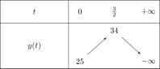
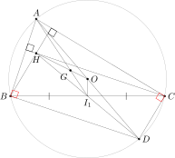

Những điều mình nghĩ¶
Giới thiệu¶
Mình không giỏi toán. Tuy nhiên toán lại là môn mình dành nhiều thời gian nhất kể từ cấp 2 và có vẻ sẽ còn tiếp diễn trong tương lai. Đây là mối lương duyên không tầm thường, nhưng chắc chắn không hề lãng mạn.
Vào thời điểm gần kì thi THPT quốc gia năm 2026 mình thấy khá nhiều các bài viết hoặc video về chương trình học môn toán. Điều này không hề mới, mà diễn ra gần như trong mọi thời kì. Kể từ thời mình học phổ thông (2015-2018) các ý kiến trái chiều về chương trình học và nội dung thi xuất hiện rất nhiều trên mạng.
Giờ đây, năm 2026, mình quyết định viết một loạt các bài viết về suy nghĩ của mình về ý nghĩa của toán học đối với bản thân, các ý kiến của cộng đồng mạng về chương trình dạy và thi toán ở nước ta, cũng như một số suy nghĩ về cách học toán từ trung bình tới khá (vì mình không phải học sinh giỏi). Ngoài ra, đôi khi mình sẽ chỉ ra một số điều mà những người khác viết sai liên quan đến toán học (ví dụ như điều kiện áp dụng công thức). Các trang web hoặc bài viết trên mạng xã hội có thể sẽ biến mất vào một ngày nào đó nên mình sẽ trích dẫn nguyên văn nội dung mình muốn xem xét kèm đường dẫn. Do đó nếu trong tương lai các bạn không thể tìm được bài viết đó thông qua đường dẫn mình đính kèm thì mong các bạn hiểu rằng bài viết hoặc trang web đó đã bị xóa, và mong các bạn thông cảm cho mình.
Toán học là gì với mình?¶
Ở đây mình muốn chia sẻ một số điều mình nghiệm ra khi học toán như:
Cái gì gọi là "rèn luyện tư duy" khi học toán?
Điều gì quan trọng khi học toán?
Ngoài ra, vì toán là môn bắt buộc trong rất nhiều kì thi chuyển cấp (từ thcs lên thpt, nhiều khối thi vào đại học/cao đẳng, ...) nên có rất nhiều vấn đề xoay quanh việc học và thi như chương trình học, cấu trúc đề thi, dạy/học thêm, ... Ở đây mình chia sẻ góc nhìn của một sinh viên - đã dành rất nhiều thời gian học và thi các cuộc thi toán (mặc dù chả có thành tích gì nổi bật) - về các ý kiến cả hay lẫn vớ vẩn của cộng đồng mạng.
Học toán để rèn luyện tư duy là gì?¶
Khi gặp các bình luận như "Học nhiều toán làm gì, sau này cũng có dùng đâu", câu trả lời mà chúng ta thường gặp nhất là "Để rèn luyện tư duy". Tuy nhiên mình có thắc mắc. Cái gì gọi là rèn luyện tư duy?.
Theo mình thấy, môn toán được giảng dạy ở các cấp học đi theo ba bước:
Giáo viên giảng lý thuyết.
Giáo viên cho bài tập.
Học sinh hoặc giáo viên sửa bài bằng cách chép bài giải lên bảng.
Nếu học sinh giải ra thì không nói, còn nếu không giải ra thì khi sửa bài chỉ có thể cắm cúi chép lại bài giải vào tập và ... không quan tâm nữa. Các bạn chịu khó hơn thì sẽ đặt câu hỏi: tại sao ra được cách làm này?.
Một trường hợp tương tự là khi một bạn nào đó trong lớp giải ra bài mà các bạn khác chưa giải ra. Tất nhiên, khi bạn kia chia sẻ đáp án thì câu hỏi phổ biến nhất vẫn là làm sao nghĩ ra cách này.
Mỗi bài toán đều gồm một tập hợp các điều kiện cho trước (còn gọi là giả thiết). Sau đó, bằng các biến đổi số học hoặc suy luận logic, chúng ta phải tính giá trị nào đó hoặc chứng minh điều gì đó. Nhưng mà, vấn đề là chúng ta sẽ biến đổi như thế nào, suy luận như thế nào, sử dụng công thức gì để đi đến kết quả cuối cùng?
Các bạn có thể nhận thấy, ở phần bài tập cuối mỗi bài học, các câu hỏi thường đơn giản tới trung bình. Các câu hỏi này giúp củng cố lại các định lí, công thức trong bài học. Tuy nhiên, khi kiểm tra 15 phút, 1 tiết, giữa kì, cuối kì, ... thì các câu hỏi trở nên dài, phức tạp và phải phối hợp rất nhiều định lí, công thức từ nhiều bài học để đi tới lời giải.
Vấn đề là, chúng ta được học về các định nghĩa, định lí, nhưng không thực sự học cách suy nghĩ logic để đưa tới kết quả. Trên thực tế, chúng ta đã sử dụng các kĩ thuật suy luận rất thường xuyên nhưng không nhận ra, và từ đó thiếu khả năng áp dụng vào giải toán. Sau đây mình xin chia sẻ một số phương pháp suy luận trong giải toán.
Suy luận ngược¶
Trong trường hợp này, giả sử chúng ta có các điều kiện (A1), (A2), (A3), và cần chứng minh (D). Khi trình bày lời giải chúng ta viết như minh họa ở hình dưới:
từ (A1) và (A2) suy ra (B1);
từ (A3) suy ra (B2);
từ (B1) suy ra (C1);
từ (B2) và (C1) suy ra (D) là điều cần chứng minh.
Đối với suy luận ngược, chúng ta cần đặt câu hỏi ngược lại: "Để chứng minh D, ta cần chứng minh điều gì trước?".
Ví dụ, trong chứng minh hình học, nếu chúng ta cần chứng minh hình tứ giác \(ABCD\) là hình thoi (D) thì chúng ta có thể bắt đầu từ một trong các dấu hiệu nhận biết:
Hình bình hành có hai cạnh kề bằng nhau.
Tứ giác có bốn cạnh bằng nhau.
Chúng ta tiếp tục đi ngược lại với câu hỏi:
Nếu theo hướng thứ nhất thì để chứng minh \(ABCD\) là hình thoi thì ta cần phải chứng minh:
\(ABCD\) là hình bình hành (C1);
hai cạnh kề \(AB\) và \(AD\) bằng nhau (B2).
Nếu theo hướng thứ hai chúng ta cần chứng minh:
hai cạnh kề \(AB\) và \(AD\) bằng nhau (B2);
hai cạnh kề \(AB\) và \(BC\) bằng nhau (B3);
hai cạnh kề \(BC\) và \(CD\) bằng nhau (B4).
Lúc này, chúng ta phải quay lại các giả thiết (A1), (A2) và (A3) và suy ra những điều đơn giản:
(A1) và (A2) suy ra (B1);
(A1) và (A3) suy ra (B3);
(A3) suy ra (B3);
(A3) suy ra (B4).
Ở đây chúng ta có điểm giao nhau giữa suy luận xuôi và suy luận ngược:
từ suy luận xuôi ta có (A1) và (A2) suy ra (B1), và từ suy luận ngược ta có (B1) suy ra (C1);
từ suy luận xuôi ta có (A3) suy ra (B3).
Kết hợp các kết quả lại ta có sơ đồ chứng minh hoàn chỉnh.
Suy luận ngược có một số nhược điểm:
nếu quá trình chứng minh quá dài, khả năng "giao nhau" giữa suy luận xuôi và suy luận ngược sẽ thấp vì sẽ có nhiều trường hợp có thể xảy ra, đôi khi chúng ta sẽ không tìm được điểm chung và dẫn tới bế tắc;
nhiều trường hợp khi suy luận ngược chúng ta đi đến việc chứng minh một điều gì đó thực chất lại được suy ra từ điều cần chứng minh, tức là chúng ta đi ngược chiều.
Suy luận ngược có các ưu điểm:
cho phép chúng ta xác định phương hướng giải quyết bài toán: để chứng minh cái này, chúng ta phải chứng minh cái kia trước.
Sử dụng mô hình đơn giản cho bài toán phức tạp¶
Trong trường hợp này, chúng ta sử dụng kết quả của các bài toán đơn giản, được học trên lớp hoặc trong các sách tham khảo, làm tiền đề để giải các bài toán phức tạp.
Những ngày đầu học toán¶
Câu hỏi 1: Khi học toán hoặc đọc sách toán thì điều gì cần quan tâm đầu tiên?
Thông thường học sinh chúng mình bám theo các tính chất để giải bài toán. Ví dụ, đường phân giác của một góc thường được hiểu là đường chia đôi góc đó. Tuy nhiên thầy nói đó là tính chất, không phải định nghĩa. Đường phân giác của góc là tập hợp các điểm cách đều hai cạnh của góc.
Càng học nhiều toán thì mình càng nhận thấy định nghĩa là nơi bắt đầu mọi thứ, là điểm quan trọng nhất của các vấn đề toán học. Các tính chất giúp chúng ta tìm lời giải nhanh hơn, nhưng khi bế tắc thì định nghĩa là nơi để chúng ta bám vào và tìm hướng giải. Trong trường hợp hình học, mỗi đối tượng hình học đều là một tập hợp điểm. Do đó chúng ta có thể nói điểm là đơn vị cơ bản nhất. Các định nghĩa đóng vai trò xây dựng nên nền tảng toán học mà về sau mình mới hiểu được ý nghĩa của chúng và hậu quả nếu chúng "có vấn đề". Phần sau mình sẽ nói rõ hơn về điều này.
Một điều quan trọng mình được thầy nhắc là không nên bám vào
các phương pháp giải toán. Thông thường các sách tham khảo,
khóa học ở cấp 3 sẽ theo dạng Bài 1. Chủ đề A. Phương pháp 1
rồi lại Bài 2. Chủ đề A. Phương pháp 2. Theo mình, các phương
pháp rất hữu ích khi gặp bài đúng dạng, chỉ cần "áp dụng công
thức" là xong. Tuy nhiên việc học theo phương pháp cũng là con
dao hai lưỡi. Nếu chúng ta gặp dạng chưa học thì khả năng cao
là chịu chết. Việc đọc các phương pháp giải bài là cần thiết để
có nhiều phương án giải quyết khác nhau, nhưng quan trọng là
khả năng tư duy để kết nối những cái mới gặp với những điều đã
biết. Một bài hình học gồm dữ kiện và học sinh cần giải quyết
bốn câu hỏi nhỏ (a), (b), (c), (d). Đây thường là cấu trúc
của câu hình học trong đề tuyển sinh lớp 10 ở thời mình.
Tất nhiên là dù đề chung hay đề thi chuyên toán luôn có những
bạn làm trọn vẹn bốn câu. Vấn đề là, khi cắt bỏ ba câu hỏi (a),
(b), (c) và chỉ bảo giải câu (d) thì bài toán trở thành tầm quốc
gia, quốc tế (VMO, IMO). Lý do rất đơn giản, những câu (a), (b),
(c), (d) được tăng dần theo độ khó và câu trước thường là tiền
đề để giải hoặc làm gợi ý cho câu sau. Khi chúng ta mất gợi ý
thì chúng ta sẽ tiếp cận ra sao để giải quyết câu (d)? Đây
chính là thực tế của toán học nói chung. Nhiều công thức, định
lí được phát biểu đơn giản, ngắn gọn như câu (d) của đề tuyển
sinh, nhưng để chứng minh chúng thì mất mấy trăm năm nỗ lực
của con người chứ không phải một lề sách là đủ.
Hai điều thầy nói có thể thấy rõ trong các cuộc thi olympiad toán, và cũng là thực tế trong toán học. Câu khó thường có dạng:
Số \(A\) được gọi là số như này nếu nó thỏa mãn các điều kiện như kia. Hãy chứng minh nếu \(A\) là số như này thì nó sẽ có các tính chất như nọ.
Đây là một dạng toán rất khó nhằn vì chúng ta đụng phải một khái niệm, định nghĩa mới lạ. Lúc này chúng ta phải bám sát định nghĩa vì đó là thứ duy nhất đề cho chúng ta để chứng minh tính chất. Vấn đề là chỉ với mỗi định nghĩa không giúp chúng ta tìm phương pháp giải. Việc dựa trên các phương pháp đã biết còn tùy vào chúng ta liên kết được định nghĩa đó với kiến thức, kinh nghiệm và trải nghiệm của bản thân tới mức nào. Điều thú vị là kiến thức, kinh nghiệm và trải nghiệm có thể được nâng cao nhờ sự chăm chỉ và rèn luyện "trực giác". Đối với người không giỏi toán như mình thì việc nâng khả năng của trực giác rất có lợi, cho phép mình "phán đoán" cách tiếp cận sẽ đưa tới lời giải. Làm càng nhiều, sự thấu hiểu và cảm nhận của mình với những bài toán càng nhạy.
Một giáo viên dạy toán khác của lớp mình cũng đã để lại nhiều bài học quý giá. Một lần nữa, câu chữ trong toán học rất quan trọng và chúng ta phải cẩn thận khi xử lý. Các bạn có thể thấy hai cách viết \(\mathbb{R} \setminus \{ 0 \}\) và \((-\infty, 0) \cup (0, +\infty)\) giống nhau vì đều chỉ việc bỏ số \(0\) khỏi tập số thực \(\mathbb{R}\). Tuy nhiên khi xét đến các khoảng (đoạn) xác định của hàm số thì đây là vấn đề rất quan trọng. Khi xét tính đồng biến, nghịch biến bằng đạo hàm, giả sử hàm số \(f(x) = \dfrac{1}{x}\) với đạo hàm \(f'(x) = -\dfrac{1}{x^2} < 0\) với mọi \(x \in \mathbb{R} \setminus \{ 0 \}\). Khi đó chúng ta có thể nói rằng hàm số \(f(x)\) xác định trên tập \(\mathbb{R} \setminus \{ 0 \}\). Tuy nhiên, nếu chúng ta kết luận rằng \(f(x)\) nghịch biến trên \(\mathbb{R} \setminus \{ 0 \}\) thì đây là kết luận sai hoàn toàn. Kết luận đúng phải dựa trên các khoảng xác định, nghĩa là hàm số nghịch biến trên hai khoảng \((-\infty, 0)\) và \((0, +\infty)\). Ở [7] (trang 220, định lí 2) ghi rằng:
Giả sử hàm số \(f\) có đạo hàm trên khoảng \(\mathbb{I}\). Khi đó
Nếu \(f'(x) > 0\) với mọi \(x \in \mathbb{I}\) thì \(f\) đồng biến trên \(\mathbb{I}\).
Nếu \(f'(x) < 0\) với mọi \(x \in \mathbb{I}\) thì \(f\) nghịch biến trên \(\mathbb{I}\).
Nếu \(f'(x) = 0\) với mọi \(x \in \mathbb{I}\) thì \(f\) có giá trị không đổi trên \(\mathbb{I}\).
Ở đây, sách giáo khoa ghi rõ ràng khoảng xác định mà trên đó hàm số có đạo hàm, nghĩa là không được nói \(f(x)\) ở trên nghịch biến trên một khoảng "hụt" ở giữa như \((-\infty, 0) \cup (0, +\infty)\) hay \(\mathbb{R} \setminus \{ 0 \}\), mà phải là nghịch biến trên hai khoảng xác định: \((-\infty, 0)\) và \((0, +\infty)\).
Một vấn đề quan trọng dễ bị sai sót là các mệnh đề "Nếu như này thì như kia". Theo ngôn ngữ logic thì đây là phép kéo theo.
Phép kéo theo "Nếu \(P\) thì \(Q\)" hay "\(P \Rightarrow Q\)", trong đó \(P\) và \(Q\) là hai mệnh đề, sai khi \(P\) đúng và \(Q\) sai, và đúng trong các trường hợp còn lại.
Thông thường có hai điểm dễ bị hiểu nhầm hoặc cố tình hiểu nhầm (khi đánh tráo khái niệm, bẻ cong logic, ...).
Đây là phép kéo theo, nghĩa là phải hội tụ đủ tất cả điều kiện \(P\) thì chúng ta mới có \(Q\).
Khi phủ định hai mệnh đề ta không thu được mệnh đề cùng tính đúng sai với mệnh đề ban đầu, tức là khi có \(\overline{P}\) chưa chắc có \(\overline{Q}\). Mình thấy việc này xảy ra gần như trong tất cả lĩnh vực không riêng toán, không biết do vô tình hay cố ý. Ví dụ mình có mệnh đề "Nếu trời mưa thì đường ướt". Như vậy có thể suy ra "Nếu trời không mưa thì đường không ướt"? Câu trả lời là chưa chắc, đường vẫn có thể ướt vì lý do khác, ví dụ như nước bị rò rỉ ở đường ống gần đó.
Về mặt logic thì phép kéo theo \(P \Rightarrow Q\) sẽ hoàn toàn tương đương phép kéo theo \(\overline{Q} \Rightarrow \overline{P}\), trong đó \(\overline{P}\) và \(\overline{Q}\) là mệnh đề phủ định của \(P\) và \(Q\). Với ví dụ trên, chúng ta suy ra được "Nếu đường không ướt thì trời không mưa". Mệnh đề này có cùng giá trị logic với mệnh đề ban đầu "Nếu trời mưa thì đường ướt": đúng thì đúng chung, sai thì sai chung. Đây là vấn đề khi lên đại học và đối chiếu sách vở mình rút ra được. Ở cấp 3 mình chỉ được nhắc rằng việc phủ định chưa chắc đúng còn lý do đằng sau (như mình vừa trình bày) thuộc khuôn khổ nội dung về logic và được giảm tải ở thời mình. Khi lên đại học thì môn toán rời rạc thường sẽ có phần cơ sở logic chính là nền tảng của phép kéo theo.
Đại học, tình yêu không thành với toán¶
Khi được tiếp cận các kiến thức toán cao hơn ở đại học thì mình nhận ra một vấn đề thú vị của bản thân: mình học toán rời rạc (lý thuyết số, hàm Boolean, lý thuyết nhóm) tốt hơn toán liên tục (các loại giải tích). Hệ quả là mình dở tệ môn vật lý vì nhiều kiến thức về giải tích được áp dụng để giải quyết các bài toán vật lý. Artificial Intelligence (AI) và Machine Learning (ML) là những từ khóa "hot trend" nhất lúc mình học đại học, nhưng vì khả năng toán liên tục yếu kém mà mình sớm đuối sức và không đi sâu nữa. Tuy nhiên mình vẫn có hy vọng sẽ hiểu một ngày nào đó ^-^. Do đó thay vì AI/ML mình đã chọn theo mật mã học (cryptography), cụ thể là mã hóa khóa đối xứng (symmetric key cryptography) dựa trên các hàm Boolean. Mình thấy mình theo lĩnh vực này bớt thảm hơn AI/ML nên là mình theo tới tận bây giờ (2025).
Khi lên đại học, các kiến thức trở nên phức tạp hơn cả về bề rộng lẫn chiều sâu. Chúng ta thường sẽ học nhiều kiến thức hơn (mở rộng) nhưng đồng thời học sâu bản chất (chiều sâu). Mình thích ham vui nên mình học rất nhiều loại toán: giải tích, xác suất thống kê, hình học giải tích, hình học affine, hình học phi Euclid, lý thuyết số, đại số Booelan, đại số tuyến tính, lý thuyết đồ thị, lý thuyết tập hợp, ...
Đa phần trong đó là ... cưỡi ngựa xem hoa. :) Các bạn có thể thấy những môn về toán rời rạc mình học rất nhiều và viết rất kỹ ở notebook này, mỗi tội đa phần vẫn là cơ bản. :) Các kiến thức về toán liên tục ở notebook này vào thời điểm hiện tại còn ít.
Quan niệm của mình về toán học¶
Mình thích toán vì sự logic và chặt chẽ của nó. Khi học những môn trừu tượng như lý thuyết nhóm, số phức, ... thì mình còn thích hơn vì khi đó có một nền tảng chung, trừu tượng hơn cho những gì chi tiết. Ví dụ, hình học Euclid được xây dựng dựa trên các tiên đề của Euclid từ quan sát trực quan. Về sau, các nhà toán học xây dựng một nền tảng cao hơn mà với một điều kiện nhất định thì Euclid đúng, nhưng với một điều kiện khác thì Euclid nhường chỗ cho người khác. Lúc này trực quan không còn đúng nữa mà phụ thuộc vào trí tưởng tượng, sáng tạo của con người. Cách tiếp cận tổng quát hóa này giúp làm đơn giản vấn đề nhưng cũng là cơ sở cho những "hạt giống" khác phát triển ở nhiều lĩnh vực khác.
Năm 2024 mình có xem một series trên Youtube của kênh Nhận thức mới về định lí bất toàn của Godel do giáo sư Phạm Việt Hưng trình bày. Mình thấy series rất thú vị và mình có nhiều quan điểm giống giáo sư, nhưng cũng có nhiều quan điểm trái ngược.
Mặc dù toán học logic và chặt chẽ, nhưng định lí bất toàn đã chứng minh được rằng toán học không hoàn hảo. Quan trọng hơn là tính đúng đắn của toán học nằm ngoài toán học và có nhiều điều, kể cả trong toán học, chúng ta không thể biết là đúng hay sai. Điều này mình đồng ý với Godel lẫn giáo sư. Tuy nhiên một vấn đề là nếu toán học sai thì sẽ hậu quả sẽ rất khủng khiếp. Ví dụ, trước khi khái niệm "giới hạn" ra đời thì người xưa có những lập luận đúng về mặt logic nhưng sai trên thực tế như nghịch lý nổi tiếng của Zeno. Ở thời của Zeno thì các khái niệm trừu tượng như "vô hạn", "vô cùng lớn", "vô cùng bé" chưa xuất hiện. Do đó khi làm việc với những đại lượng vô hạn đã gây ra những hiểu lầm mà về mặt trực quan chúng ta lại thấy "có vẻ đúng". Euclid cho rằng "Một phần thì nhỏ hơn toàn bộ". Tuy nhiên lý thuyết tập hợp của Cantor đã chứng minh được một phần (của tập vô hạn) cũng bằng toàn bộ, thậm chí có nhiều kiểu vô hạn với "kích thước" lớn nhỏ khác nhau.
Trước thế kỉ 18, toán học được sử dụng làm công cụ chính để nghiên cứu các lĩnh vực khác, nhất là vật lí. Điều này phù hợp khi giải thích các hiện tượng quan sát được vào thời đó như mặt phẳng Euclid. Vấn đề là vật lí dựa trên nền tảng toán học, nhưng toán học lại dựa trên các quan sát hiện tượng vật lí. Đây là một vòng luẩn quẩn và chỉ cần sai sót nhỏ trong toán sẽ gây ra ảnh hưởng rất nghiêm trọng. Từ đó toán học cần phải đúng đắn từ nội tại.
Các nhà toán học thế kỉ 18, 19 như Cauchy, Hilbert, ... đã xây dựng lại toán học không dựa trên quan sát vật lí mà dựa trên các định nghĩa chặt chẽ. Trong series về định lí bất toàn, giáo sư Phạm Việt Hưng có nói các nhà toán học thời kì này tôn sùng và thần thánh hóa toán học quá mức. Điều này mình vừa đồng ý vừa không đồng ý với giáo sư. Rõ ràng việc các nhà toán học làm lúc đó là rất cần thiết để đảm bảo nội tại toán học thống nhất, không mâu thuẫn, và chặt chẽ. Việc họ tôn sùng quá mức cho thấy họ hiểu sự quan trọng của việc họ làm và rất nhiều những điều bị bác bỏ trước đó đã được đưa trở lại toán học. Từ đây mở ra rất nhiều khả năng phát triển, mở rộng tới những nơi chúng ta chưa thể thấy, sửa chữa những sai lầm của người đi trước. Bằng việc để trí tưởng tượng bay xa, kết hợp với logic chặt chẽ, đã giúp nhiều lĩnh vực đoán trước sự tồn tại của nhiều đối tượng trước cả khi phát hiện ra chúng.
Tuy nhiên quan niệm của mình về các nhà toán học thời kì đó có chút khác. Mình công nhận là những đóng góp của họ đã đưa tới sự phát triển đáng kinh ngạc trong nhiều lĩnh vực, nhưng bản thân mình thấy đó là công việc ... rất nhàm chán. Mục tiêu quan trọng nhất của họ là làm chặt chẽ và đảm bảo tính đúng đắn của toán học từ những khái niệm có thể gọi là cơ bản nhất làm nền tảng. Những khái niệm như điểm, đường, ... đã được định nghĩa từ rất lâu ở bộ sách huyền thoại Elements của Euclid [34], nhưng trong sách lại định nghĩa chung chung kiểu:
mặt là thứ có bề dài và có bề rộng;
đường là thứ chỉ có bề dài mà không có bề rộng;
điểm là thứ không có bề dài lẫn bề rộng.
Ở đây, "thứ" là gì? Nhiều hình thù kì quặc đã được xây dựng, vừa có thể được xem là đường mà cũng vừa có thể được xem là mặt theo định nghĩa của Euclid, ví dụ như tấm thảm Sierpinski. Rõ ràng những nhà toán học hiện đại đã làm công việc chán ngắt là định hình lại toán học nhân loại trong 2000 năm. Cộng 1 respect cho các nhà toán học chứ mình thấy là oải rồi. :>>>
Đối với mình, toán học là bộ môn của đam mê, logic, và cả toxic. =))) Các nhà toán học không quan tâm kết quả của mình có ứng dụng thực tiễn gì. Họ quan tâm tính đúng đắn của từng mệnh đề, từng chứng minh. Họ cố gắng bảo vệ niềm tin của mình đến nỗi dám đương đầu mọi thứ, thậm chí tử thần.
Ở thời Trung Cổ nơi những tòa án dị giáo đàn áp dã man các nhà khoa học ủng hộ thuyết nhật tâm của Copernicus, các nhà khoa học (đa phần là toán và thiên văn) thậm chí còn bác bỏ những điểm chưa đúng của Copernicus - cho rằng Trái Đất quay xung quanh Mặt Trời - và bổ sung rằng bản thân Mặt Trời cũng quay quanh cái gì đó khác nữa. Cauchy tin tưởng cách xây dựng giới hạn dựa trên ngôn ngữ \(\delta-\varepsilon\) tới nỗi năm lần bảy lượt chơi trò "mèo vờn chuột" với định chế khoa học cao nhất nước Pháp là Viện Hàn lâm và Đại học Bách khoa (Ecole Polytechnique) [35]. Tất nhiên Cauchy đã có cuộc đời không dễ dàng gì và nhiều lần rơi vào tình cảnh khó khăn. Cantor tin tưởng lý thuyết tập hợp của mình là vững như đá tảng, nếu mũi tên nào bắn vào thì mũi tên sẽ bật ngược lại người bắn [35]. Tuy nhiên phe đối lập với Cantor có các nhà toán học vĩ đại Poincare và Kronecker với quan điểm bảo thủ luôn cố gắng vùi dập ý tưởng của ông. Về sau, những người ủng hộ ông như Hilbert, Dedekind, ... đã thắng thế, và lý thuyết tập hợp của Cantor đã được truyền bá rộng rãi. Đáng tiếc thay, Cantor đã ra đi mãi mãi trước đó do đột quỵ từ trầm cảm bởi sức ép từ phe Kronecker và nỗi đau mất người thân.
Kết luận¶
Các bạn thấy đó, bản thân toán học không hoàn hảo và thậm chí các nhà toán học nhiều lần xung đột với nhau về logic. Về mặt logic thì ai cũng đúng, nhưng éo le là người khác không chấp nhận bạn đúng và bác bỏ nó. :'( Lúc này, hệ thống định nghĩa là điều cực kì quan trọng và cần được thống nhất trên toàn thế giới, giữa các cộng đồng khoa học. Trong các công trình của mình thì hệ thống định nghĩa phải rõ ràng, thống nhất và không mâu thuẫn. Khi đó những kiến thức được xây dựng trên đó sẽ hợp lý về logic.
Toán học đã, đang và sẽ luôn là niềm đam mê của mình bất chấp khả năng có hạn. ^)^ Mình hy vọng notebook này sẽ lưu trữ đam mê tuổi trẻ của mình, và nếu trong khả năng có hạn, tiếp thêm sức mạnh cho những người theo đuổi toán học.
Vận dụng toán hay ứng dụng toán trong chương trình phổ thông?¶
Rất nhiều người đăng các bài viết về việc chương trình môn toán hoặc đề thi không có tính ứng dụng thực tiễn, hoặc học toán nhiều chả để làm gì sau này. Tuy nhiên, theo mình, mọi người đang nhầm lẫn giữa việc vận dụng toán để giải quyết các bài toán thực tế, và ứng dụng toán cho các bài toán thực tế.
Vận dụng toán là làm gì?¶
Ví dụ, các nhà vật lý, sau khi khảo sát các yếu tố tác động lên chuyển động của một vật, thu được phương trình hoành độ và tung độ theo thời gian lần lượt là \(x = x(t)\) và \(y = y(t)\) với \(t\) là thời gian, bắt đầu từ \(0\). Họ cần biết:
tại thời điểm nào thì vật đạt độ cao lớn nhất, tức là \(y_{\max}\);
tại thời điểm nào vật sẽ chạm đất, tức là \(y = 0\).
Lúc này, bài toán do vật lý đặt ra là khảo sát tính chất của hàm số \(x(t)\) và \(y(t)\) để tìm được thời điểm vật đạt độ cao lớn nhất và thời điểm vật chạm đất. Tùy thuộc vào phương trình chúng ta có thể có nhiều phương pháp giải khác nhau. Đây là ví dụ của vận dụng toán để giải vấn đề thực tế: chúng ta có (hoặc chưa có) rất nhiều phương pháp để khảo sát các hàm số, và chúng ta cần xem xét:
chúng ta sẽ sử dụng các phương pháp nào để giải?
chúng ta sẽ kết hợp các phương pháp đó theo thứ tự nào?
Trong một video trên youtube của kênh KTTV nhưng đã bị xóa, họ chỉ ra một bài toán trong đề thi đại học của Mỹ với ý đại khái là: khi ném xiên một vật thì phương trình phụ thuộc giữa tung độ vào thời gian là \(y = -4t^2 + 12t + 25\), tìm thời điểm vật đạt độ cao lớn nhất và xác định độ cao lớn nhất đó. Ở đây chúng ta có hai cách giải đơn giản:
Cách 1 sử dụng tính chất \(a^2 \geqslant 0\) với mọi \(a \in \RR\). Ta có
như vậy \(y_{\max} = 34\) (đơn vị dài) khi \(2t - 3 = 0\), hay \(t = 3/2\) (đơn vị thời gian).
Cách 2 sử dụng đạo hàm: \(y'(t) = -(8t - 12)\). Cho \(y'(t) = 0\) thì \(t = 3/2\). Khảo sát sự biến thiên của hàm số ta có bảng sau:

Nói cách khác \(t = 3/2\) là cực đại và \(y(3/2) = 34\) là giá trị lớn nhất của hàm số.
Như vậy có thể nói rằng, vận dụng là việc sử dụng bất kì phương pháp nào mà bản thân biết để giải một bài toán cụ thể. Từ đó, tất cả dạng đề liên quan vật lý, hóa học, thậm chí kinh tế, xuất hiện trong đề thi có chức năng đánh giá khả năng vận dụng các kiến thức học sinh được học, chứ KHÔNG PHẢI ỨNG DỤNG.
Ngoài ra, việc vận dụng linh hoạt các kiến thức toán học cho phép chúng ta đánh giá đề có đúng không hoặc việc giải phương trình/hệ phương trình có khả thi không.
Lấy ví dụ trên, đồ thị của hàm số \(y(t) = -4t^2 + 12t + 25\) là một parabol úp xuống, phù hợp với việc chúng ta ném xiên (chếch lên) một vật và vật đó sẽ từ từ hạ độ cao đến khi chạm đất. Do đó, khi đề cho phương trình phụ thuộc giữa tung độ và thời gian là một hàm số bậc hai \(y(t) = at^2 + bt + c\) thì chắc chắn \(a < 0\), vì nếu \(a > 0\) thì đồ thị là parabol ngửa lên, không hợp lí. Thêm nữa, do đạo hàm là \(y'(t) = 2at + b = 0\), tương đương \(t = -b/2a\), mà \(t > 0\) nên chắc chắn \(b\) và \(a\) trái dấu, tức là \(b > 0\). Nói cách khác, khi nhìn vào hàm số đề cho ta có thể biết đề có đúng hay không.
Ứng dụng toán là làm gì?¶
Ngược lại, ứng dụng là việc sử dụng một kiến thức toán nhất định để mô hình hóa hoặc giải quyết một/nhiều vấn đề thực tế. Đây là điểm khiến chúng ta nghĩ rằng toán học không có ứng dụng.
Ví dụ, định lí Pythagoras nói lên quan hệ giữa các cạnh trong tam giác vuông. Trong thời cổ đại người Ai Cập đã ứng dụng định lí Pythagoras trong xây dựng. Về sau, khi nhà toán học Fermat đặt ra câu hỏi mà sau này trở thành định lí cuối cùng của Fermat, rằng phương trình \(x^n + y^n = z^n\) không có nghiệm nguyên với mọi \(n\) nguyên lớn hơn \(2\), thì nhân loại đã tốn hơn 300 năm để giải. Vấn đề là, định lí của Fermat chả có ứng dụng gì trong cuộc sống cả, trong khi dạng cơ bản hơn là định lí Pythagoras thì có.
Tuy nhiên nếu chỉ như vậy mà đánh giá học toán không có ứng dụng thì có đúng không? Theo mình đây là ý kiến sai hoàn toàn. Mặc dù định lí cuối cùng của Fermat không có ứng dụng thực tiễn, nhưng con đường mà toán học đã đi để dẫn tới chứng minh cho định lí này đã thúc đẩy rất nhiều phương pháp toán học ra đời và chúng có ứng dụng rộng rãi trong thực tế.
Tiêu biểu nhất là lý thuyết đồ thị, xuất hiện từ bài toán du lịch qua 7 cây cầu của thành phố Kenigsberg, lại trở thành nền tảng quan trọng trong các mô hình thực tế như giao thông, mạng xã hội.
Tiếp theo là đường cong elliptic, nền tảng trong chứng minh của định lí cuối cùng của Fermat, lại là một trong phương pháp mật mã học quan trọng, đảm bảo sự an toàn của thông tin trên Internet.
Tổng kết¶
Như vậy, các bạn có thể thấy rằng, mối liên hệ của toán học với thực tế sẽ theo các bước:
Các nhà vật lý, hóa học, sinh học, kinh tế, ... đặt ra một bài toán dựa trên các quan sát, thí nghiệm ... của họ.
Họ cùng các nhà toán học phát triển các phương pháp toán học để mô hình hóa, tức là biểu diễn các bài toán đó dưới ngôn ngữ toán học, hoặc vận dụng các phương pháp đã biết để giải mô hình đó.
Người đi sau xác định được rằng các phương pháp toán học đó có ứng dụng trong vật lý, hóa học, sinh học, kinh tế, ...
Người đi sau chưa xác định được các phương pháp toán học khác có ứng dụng gì trong thực tế, hoặc không có ứng dụng thực tế.
Do đó, việc đòi hỏi Bộ Giáo dục và Đào tạo cho thêm các bài toán thực tiễn vào chương trình học hay đề thi không có ý nghĩa gì.
Việc sử dụng kí hiệu và công thức toán¶
Khi tham khảo các tài liệu về mật mã thì mình gặp chút khó khăn vì mỗi tác giả kí hiệu mỗi kiểu cho cùng khái niệm toán học. Hơn nữa, trong cộng đồng toxic CH mình cũng thấy được nhiều người kí hiệu mà không hiểu rõ nó là gì. Trong bài viết này mình sẽ nói về các kí hiệu toán học mà mình sẽ dùng trong các bài viết của mình, cũng như quan điểm về chúng.
Câu hỏi: có nên sử dụng kí hiệu mọi lúc, mọi nơi?
Trong toán học, kí hiệu được sử dụng nhằm mô tả những định nghĩa, định lí. Thông qua kí hiệu, các nhà toán học của nhiều quốc gia khác nhau có thể "thấu hiểu" nhau bất chấp rào cản ngôn ngữ. Tuy nhiên trong các bài viết của mình thì mình sẽ không sử dụng kí hiệu mọi lúc, mọi nơi.
Ví dụ, định nghĩa giới hạn hàm số theo kiểu \(\delta-\varepsilon\) được ghi như sau
Đây là định nghĩa giới hạn hữu hạn của hàm số, nói rằng hàm số \(f(x)\) tiến tới \(L\) khi \(x\) tiến tới \(x_0\). Mình thấy việc kí hiệu đôi khi khiến mình bị rối khi theo dõi các phần (có lẽ do mình không giỏi toán). =(((
Do đó định nghĩa giới hạn hàm số ở trên được viết lại theo tiếng Việt như sau:
với mọi \(\varepsilon > 0\)
tồn tại \(\delta > 0\) sao cho:
với mọi \(x\) mà \(\left|x - x_0\right| < \delta\)
ta sẽ có \(\left|f(x) - L\right| < \varepsilon\).
Khi này, việc chứng minh giới hạn hàm số theo định nghĩa sẽ "thông" hơn. Mình sẽ theo từng câu chữ ở trên:
lấy \(\varepsilon > 0\) bất kì (tương ứng lượng từ với mọi)
tìm \(\delta > 0\) (chứng minh tồn tại, thường sẽ liên hệ với \(\varepsilon\) ở trên) thỏa mãn:
nếu với mọi \(x\) thỏa mãn \(\left|x - x_0\right| < \delta\)
mình sẽ suy ra được \(\left|f(x) - L\right| < \varepsilon\).
Kết luận: việc viết ra đầy đủ giúp mình biết được các bước cần thực hiện theo định nghĩa, định lí nào đó.
Câu hỏi: \(\mathbb{Z}_n\) hay \(\mathbb{Z} / n \mathbb{Z}\)?
Thông thường, việc kí hiệu \(\mathbb{Z}_n\) được hiểu là tập hợp các số dư có thể có khi chia một số nguyên bất kì cho \(n\), nói cách khác
Đối với \(\mathbb{Z} / n \mathbb{Z}\), chúng ta có thể dùng hai cách lí giải: bằng lý thuyết nhóm và bằng quan hệ tương đương (quan hệ hai ngôi).
Nếu sử dụng lý thuyết nhóm, nếu ta nhân mỗi phần tử trong \(\mathbb{Z}\) với \(n\) thì
Ta lần lượt cộng \(i\) cho các phần tử của \(n\mathbb{Z}\) với \(i = 0, 1, \ldots, n - 1\). Khi đó ta sẽ có
Các tập \(0 + n\mathbb{Z}\), \(1 + n\mathbb{Z}\), ..., \((n - 1) + n\mathbb{Z}\) rời nhau nên chúng ta có đúng \(n\) coset. Hơn nữa phép cộng số nguyên có tính giao hoán nên \(i + n\mathbb{Z} = n\mathbb{Z} + i\). Như vậy tập \(n\mathbb{Z}\) là nhóm con chuẩn tắc (hay normal subgroup) của \(\mathbb{Z}\). Khi đó \(\mathbb{Z} / n\mathbb{Z}\) được gọi là nhóm thương (hay quotient group) và kí hiệu
Đối với cách giải thích sử dụng quan hệ tương đương, chúng ta kí hiệu
Nói cách khác, \(x\) và \(y\) có quan hệ nếu \(x\) và \(y\) có cùng số dư khi chia cho \(n\).
Dễ thấy
Đây là ví dụ hoặc bài tập phổ biến trong các bài giảng về quan hệ tương đương. Ở đây, quan hệ tương đương chia (phân hoạch) tập \(\mathbb{Z}\) thành \(n\) tập con không giao nhau, gọi là các lớp tương đương. Chúng ta lấy số nguyên không âm nhỏ nhất của mỗi lớp làm đại diện cho lớp đó, tức là \(0\), \(1\), ..., \(n-1\) như trên.
Khi đó, tập thương là tập hợp các lớp tương đương
Như vậy, dù giải thích theo lý thuyết nhóm hay quan hệ tương đương đều chỉ ra rằng \(n\mathbb{Z}\) chia tập \(\mathbb{Z}\) thành \(n\) tập con không giao nhau, và chúng ta lấy số nguyên không âm nhỏ nhất của mỗi tập làm đại diện cho tập đó. Lúc này, các phép cộng, trừ và nhân (không có chia) trên tập \(\mathbb{Z} / n\mathbb{Z}\) sẽ cho các phần tử vẫn thuộc \(\mathbb{Z} / n\mathbb{Z}\).
Tuy nhiên phép tính trên \(\mathbb{Z}_n\) phải chỉ định phép modulo \(n\), chẳng hạn là \(a + b \bmod n\) với \(a, b \in \mathbb{Z}_n\).
Lý do hai tập này có thể dùng như nhau là tính đẳng cấu, kí hiệu là \(\mathbb{Z}_n \cong \mathbb{Z} / n\mathbb{Z}\). Trong nhiều tài liệu, tập \(\mathbb{Z}_n\) được định nghĩa là
chỉ vành các số dư (resuide ring, кольцо вычётов). Ý nghĩa vẫn giống \(\mathbb{Z} / n\mathbb{Z}\), ta xét tất cả phần tử của \(\mathbb{Z}\) dưới \(n\) lớp rời nhau. Do đó mình nghĩ rằng cần hiểu rõ ý nghĩa của \(\mathbb{Z} / n\mathbb{Z}\) trước khi phán \(\mathbb{Z}_n\) ở bất cứ đâu.
Câu hỏi: \(\mathbb{Z}_p\) hay \(\mathbb{F}_p\)?
Khi \(p\) là số nguyên tố thì chúng ta có thể thực hiện phép chia khác \(0\) (nhân nghịch đảo) trong modulo \(p\). Khi đó tập \(\mathbb{Z}_p\) trở thành trường và chúng ta có thể dùng \(\mathbb{F}_p\) để thể hiện rõ ý này (F = Field). Cách kí hiệu \(\mathbb{Z}_p\) không sai nhưng mình nghĩ sẽ khó theo dõi xem đâu là trường, đâu không phải là trường (mới chỉ là vành).
Câu hỏi: \(\mathrm{GF}(2^8)\) hay \(\mathrm{GF}(256)\)?
Rõ ràng \(2^8 = 256\), và hai cách kí hiệu là một. Tuy nhiên mình chọn viết cách đầu.
Đầu tiên, việc kí hiệu \(2^8\) sẽ dễ liên hệ tới phần tử của trường, tức là các đa thức bậc \(8\) và có dạng
với \(a_i \in \mathrm{GF}(2)\).
Nếu viết \(\mathrm{GF}(256)\), chúng ta phải nhớ xem \(256\) phân tích thành thừa số nguyên tố ra sao. Điều này đơn giản nếu chúng ta làm việc với các số quen thuộc như \(2^8 = 256\). Tuy nhiên nếu chúng ta nghiên cứu trên số nguyên tố khác, chẳng hạn
thì không phải ai cũng nhớ. Chúng ta phải mất công phân tích số \(6561\) thành \(3^8\), hay \(625\) thành \(5^3\), rồi mới làm tiếp.
Một ví dụ khác là
thì cũng là \(\mathrm{GF}(2^{128})\) thôi, được dùng khi tính message authentication code (MAC) của thuật toán mã hóa đối xứng. Ở đây chắc chắn mình sẽ chọn viết \(\mathrm{GF}(2^{128})\) thay vì con số dài ngoằn kia.
Như vậy, việc viết \(\mathrm{GF}(256)\) không sai, nhưng mình nghĩ viết \(\mathrm{GF}(2^8)\) có nhiều ưu điểm hơn và sẽ giúp tạo thói quen tốt.
Câu hỏi: \(\mathbb{F}_{2^8}\) hay \(\mathbb{F}_2^8\)?
Hai tập hợp này có cùng số phần tử là \(2^8 = 256\). Tuy nhiên ý nghĩa của chúng khác nhau hoàn toàn.
Đầu tiên, \(\mathbb{F}_{2^8}\) chỉ trường các đa thức
với \(a_i \in \mathbb{F}_2\). Các phép tính cộng, trừ, nhân, chia hai đa thức được thực hiện trong modulo \(m(x)\) - là một đa thức tối giản bậc \(8\) với hệ số trong \(\mathbb{F}_2\).
Trong khi đó, \(\mathbb{F}_2^8\) chỉ các vector
với \(a_i \in \mathbb{F}_2\). Ta xem \(\mathbb{F}_2^8\) là một không gian vector. Khi đó chúng ta chỉ có hai phép tính trên tập \(\mathbb{F}_2^8\) là cộng hai vector và nhân vector với một phần tử thuộc \(\mathbb{F}_2\). Nếu các bạn mở rộng lên không gian Euclid hay gì đó thì vẫn không giống \(\mathbb{F}_{2^8}\).
Câu hỏi: \(\mathrm{GF}(p^n)\) hay \(\mathbb{F}_{p^n}\)?
Hai cách kí hiệu đều có ý nghĩa như nhau.
Khi \(n = 1\) thì mình thấy dùng \(\mathrm{GF}(p)\) hay \(\mathbb{F}_p\) đều được.
Khi \(n \geqslant 2\) thì mỗi cách kí hiệu đều có ưu điểm và nhược điểm riêng. Cả hai cách đều chỉ trường số với các phần tử là đa thức
với \(a_i \in \mathbb{F}_p\), hay cũng có thể viết \(a_i \in \mathrm{GF}(p)\).
Việc viết \(\mathbb{F}_{p^n}\) có nhược điểm là làm đại lượng \(p^n\) hơi nhỏ, khó nhìn nên sử dụng \(\mathrm{GF}(p^n)\) sẽ tốt hơn. Tuy nhiên một ưu điểm của \(\mathbb{F}_{p^n}\) là có thể chỉ tập các vector mà mỗi vị trí là một phần tử trong \(\mathbb{F}_{p^n}\). Ví dụ
với \(f_i(x)\) là các phần tử thuộc \(\mathbb{F}_{p^n}\). Nếu sử dụng \(\mathrm{GF}(p^n)\) thì phải viết \(\mathrm{GF}(p^n)^m\) khá rối. Khi chúng ta xét tới ma trận có phần tử trong \(\mathbb{F}_{p^n}\) thì còn rối hơn nữa. Thay vào đó ta có thể viết
với \(a_{i, j}(x)\) là phần tử thuộc \(\mathbb{F}_{p^n}\).
Từ các lý do trên có thể thấy \(\mathbb{F}_{p^n}\) đa dụng hơn nên mình sẽ dùng cách kí hiệu này.
Những câu nói hay¶
There is no royal road to geometry.
Không có con đường hoàng gia đến hình học.
—Euclid
Học, học nữa, học mãi.
—Vladimir Ilich, Lenin (1870 - 1924)
We must know. We will know.
Chúng ta phải biết. Chúng ta sẽ biết.
—David, Hilbert (1862 - 1943)
Không thể là một nhà toán học mà không có tâm hồn thi sĩ.
—Sofia, Kovalevskaya (1850 - 1891)
Đường đi ngàn dặm, khởi đầu bởi một bước chân.
—Lão Tử
Không có việc gì khó.
Chỉ sợ lòng không bền.
Đào núi và lấp biển.
Quyết chí ắt làm nên.
—Hồ Chí Minh (1890 - 1969)
Luôn yêu để sống. Luôn sống để học toán. Luôn học toán để yêu.
—Diễn đàn toán học Việt Nam
Những thứ đích thực có giá trị không sinh ra từ tham vọng hoặc ý thức trách nhiệm đơn thuần, mà đến từ tình yêu và sự hiến dâng cho nhân loại và những điều khách quan.
—Albert Einstein
Tôi tư duy nên tôi tồn tại.
—René Descartes
Những câu nói vớ vẩn¶
Einstein (được cho là) đã nói câu: "Nếu bạn không thể giải thích vấn đề để đứa trẻ 5 tuổi cũng hiểu thì chứng tỏ bạn đang không hiểu vấn đề".
Đối với mình đây là câu nói rất vớ vẩn vì những lý do sau.
Thứ nhất, tại sao phải là đứa trẻ 5 tuổi? Con người trưởng thành theo từng giai đoạn, do đó chương trình học cũng được thiết kế thành các cấp, thường là ba cấp từ tiểu học, thcs và thpt. Độ khó của chương trình học mỗi môn cũng tăng dần theo từng lớp. Vì vậy, chúng ta chỉ có thể giải thích một vấn đề cho những người đã có một lượng kiến thức nền tảng nhất định liên quan vấn đề đó. Trong khi đó, việc giải thích một vấn đề phức tạp cho người không có nền tảng đòi hỏi chúng ta giải thích các kiến thức nền tảng ở dạng giản lược và có thể đánh mất bản chất của kiến thức nền tảng. Ngoài ra, khả năng hấp thụ kiến thức và thấu hiểu của mỗi người khác nhau. Nếu đứa trẻ 5 tuổi trong câu nói trên là Einstein tái sinh ở thế kỉ 21 thì việc giải thích các lý thuyết vật lí hiện đại là khả thi. Tuy nhiên nếu chọn một đứa trẻ bất kì ngoài đường và giải thích về phân rã nguyên tử thì khả năng cao bạn sẽ bị phụ huynh của đứa trẻ dẫn lên công an vì tội quấy rối, trong khi bản thân đứa trẻ thì ngơ ngác vì không hiểu chuyện gì xảy ra.
Thứ hai, tại sao phải giải thích cho đứa trẻ, hay thậm chí là người lớn khác? Nếu chúng ta muốn trình bày một vấn đề nào đó, chúng ta sẽ trình bày cho những người quan tâm và những người chúng ta muốn họ quan tâm tới, ví dụ khách hàng, đối tác.
Trong trường hợp nghiên cứu khoa học, chúng ta trình bày vấn đề và phương pháp giải quyết vấn đề đó, với mặc định rằng người đọc đã hoàn thành một trình độ văn hóa nhất định. Thông thường, phần giới thiệu sẽ được viết bởi ngôn ngữ phổ thông để giúp người không cùng lĩnh vực cũng nắm được (phần nào đó) vấn đề và phương pháp chúng ta dùng để giải quyết vấn đề. Ở phần chính của nghiên cứu, các kiến thức đa phần mặc định là bạn đã học xong các môn đại cương ở đại học, chứ không giải thích mọi chi tiết như "phép nhân ma trận được thực hiện như thế nào" hay "chuyển vị của ma trận là gì".
Trong trường hợp khách hàng, đối tác, chúng ta trình bày những điểm chung với họ và có thể bỏ qua các chi tiết phức tạp.
Về một vị giáo sư và định lý Godel¶
Cảnh báo
Mình sẽ không sử dụng từ ngữ khó nghe nhưng nội dung sẽ gây khó chịu. Độc giả cân nhắc trước khi xem!!!
Dạo gần đây mình xem một loạt video trên Youtube của kênh Nhận thức mới về định lí bất toàn của Godel do giáo sư Phạm Việt Hưng (PVHg) trình bày.
Đây là một chủ đề khá thú vị và mới mẻ với mình. Sau khi xem xong series video và đọc các bài viết trên blog cá nhân của giáo sư thì mình vừa thấy buồn cười vừa thấy khó chịu. Do đó mình quyết định viết bài này.
Hệ quả định lí Godel¶
Theo giáo sư, việc một sự vật tác động lên chính nó là không thể xảy ra. Điều này có thể xem là hệ quả của định lí Godel.
Giáo sư đưa ra ví dụ về hạt Higgs ở tập 2 của series. Mình không biết hạt Higgs là hạt gì vì kiến thức phổ thông của mình với vật lí chỉ dừng lại ở proton, electron và neutron. Giáo sư giải thích rằng, hạt Higgs là hạt truyền khối lượng cho các hạt khác lớn hơn, nhưng tiếp tục đặt vấn đề là hạt nào truyền khối lượng cho hạt Higgs? Theo định lí Godel, hạt Higgs không thể truyền khối lượng cho chính nó, vì khi đó hạt Higgs là một hệ tự quy chiếu. Như vậy đưa tới hệ quả là Lý thuyết về mọi thứ (TOE, Theory Of Everything) vẫn đang bế tắc, suy ra việc lí giải nguồn gốc khối lượng các vật cũng không thể đạt được.
Tiếp theo, ở tập 3, giáo sư nói về việc trí tuệ nhân tạo (AI, Artificial Intelligence) không thể trở nên giống con người. Con người chúng ta sử dụng ý thức, là bộ não, để tạo ra một "bộ não" máy móc. Như vậy, cũng theo định lí Godel, vì con người không thể hiểu chính bộ não của bản thân, thì làm sao có thể tạo ra một "bộ não" giống bản thân, có trực giác, có cảm xúc, có ý thức?
Hai vấn đề trên cho thấy một hệ quả quan trọng của định lí Godel do giáo sư trình bày
Một hệ tự quy chiếu hoặc mâu thuẫn, hoặc không thể kiểm chứng được tính đúng sai.
Đến đoạn này mình vẫn nghĩ mọi thứ bình thường, nhưng hai tập tiếp theo về việc tìm nguồn gốc sự sống của giáo sư làm mình thấy rất khó hiểu.
Trước đó, giáo sư có nhiều bài viết trên trang cá nhân có nội dung giống hai tập tiếp theo trên Youtube cũng về nguồn gốc sự sống. Nói đơn giản thì giáo sư phê phán thuyết tiến hóa của Darwin và đưa ra vấn đề về nguồn gốc sự sống, thậm chí gọi đó là "sự dối trá". Tới đây mình có một thắc mắc. Nếu hạt Higgs không thể truyền khối lượng cho chính nó, con người không thể sử dụng bộ não của bản thân để tạo ra "bộ não" nhân tạo (AI), thì sự sống cũng không thể giải thích nguồn gốc sự sống?
Logic ở đây là, theo định lí Godel, một lý thuyết giải thích nguồn gốc mọi thứ, là không tồn tại đối với hệ tự quy chiếu. Vì vậy việc truy tìm nguồn gốc của một hiện tượng nào đó luôn đi tới bế tắc.
Nguồn gốc khối lượng là từ hạt nào? Nếu hạt Higgs truyền khối lượng cho các hạt khác thì hạt nào truyền khối lượng cho nó? Vấn đề ở đây là bản thân hạt Higgs không thể truyền khối lượng cho chính nó.
Nguồn gốc tư duy của AI là từ tư duy con người. Nhưng con người không thể giải thích bộ não của bản thân, hay nói cách khác là nguồn gốc ý thức và tư duy của bản thân, thì làm sao tạo ra "bộ não" nhân tạo cũng có ý thức và tư duy giống bản thân?
Nguồn gốc sự sống là từ một sự sống trước đó mà thành (tiến hóa, thoái hóa, ...). Như vậy, sự sống có thể giải thích nguồn gốc của sự sống không? Thuyết tiến hóa của Darwin nói rằng sự sống đều bắt nguồn từ một "gốc" (gốc của cây sự sống). Nhưng qua lời giáo sư thì "gốc" đó không tồn tại. Giáo sư đề cập tới một giải thích khác về thuyết tiến hóa của Darwin là sự sống bắt đầu từ một "thảm" (thảm cỏ của sự sống). Trong đó sự sống bắt nguồn từ nhiều vị trí trong thảm cỏ đó, không phải từ một gốc đơn thuần như thuyết của Darwin. Thậm chí như vậy vẫn không làm hài lòng các nhà khoa học (thực ra là giáo sư). Như vậy, theo logic của mình ở trước, mọi thuyết tiến hóa giải thích nguồn gốc sự sống đều sai, theo những ví dụ giáo sư đưa ra, và thông qua định lí Godel?
Theo trải nghiệm cá nhân của mình, việc phê phán hay châm biếm thuyết tiến hóa của Darwin không phải điều gì mới mẻ. Từ nhiều năm trước mình đã từng nghe một thầy cà khịa kiểu "thế quái nào khỉ và người lại có cùng tổ tiên". Mình không biết nhiều về các thuyết tiến hóa, nhưng video của giáo sư thật sự cung cấp cho mình nhiều kiến thức và bài học. Bài học quan trọng nhất mình rút ra là:
Chúng ta có thể ứng dụng định lí Godel để bác bỏ những rất nhiều cố gắng của các nhà khoa học.
Mình không biết giáo sư có tôn sùng quá mức định lí Godel hay không, nhưng việc bác bỏ nỗ lực của người khác mà không đưa ra một lý thuyết tiến bộ hơn hay có chứng minh vững chắc mà chỉ dựa vào một định lí TOÁN HỌC để giải thích tính TRIẾT HỌC thì mình thấy khá buồn cười.
Về Cantor¶
Phần này không nói về tính đúng sai cả về triết học lẫn toán học. Mình chỉ có ý kiến về cách trình bày của giáo sư.
Về bài viết Về Cái Bất khả Quyết định.
Trong bài viết, giáo sư nhắc rằng "người đời gán cho Cantor là điên rồ", nhưng sau đó giáo sư lại mở ngoặc "thực tế cuối cùng ông đã mắc bệnh thần kinh". Ở đây mình rất khó chịu vì cách viết không đầu đuôi (không nói lý do Cantor bị bệnh thần kinh) dễ khiến người khác nghĩ ông ấy đưa ra quá nhiều ý kiến kì lạ tới nỗi bị thần kinh.
Câu chuyện thực sự là khi cố gắng chứng minh giả thuyết Continuum mà không có tiến triển (mà giáo sư cũng đề cập trong bài viết) thì Cantor cũng đang bị chèn ép rất mạnh bởi phe chống đối Lý thuyết tập hợp của ông (do Kronecker và Poincare đứng đầu). Hậu quả là những bài báo của ông đã không thể công bố trên các tạp chí uy tín do quyền lực ngầm từ phe Kronecker và Poincare, nên ông chỉ có thể đăng trên các tạp chí thường, uy tín thấp. Điều này khiến ông không thể có vị trí công việc tốt tại các đại học lớn ở nước Đức thời bấy giờ khiến cuộc sống khó khăn.
Ngoài ra một bi kịch đã xảy ra với Cantor là đứa con trai út mà ông rất yêu thương đã qua đời. Quá nhiều biến cố ập đến khiến tinh thần Cantor rơi vào hỗn loạn và cuối cùng là bị bệnh.
Mình không biết giáo sư có thật sự biết về cuộc đời Cantor hay không trước khi viết những dòng đó. Mình rất hy vọng là có vì văn phong như vậy không thể biết giáo sư nói đùa hay nói thật.
Một lần nữa, việc tôn sùng định lí Godel quá mức là niềm tin của giáo sư và mình không bận tâm. Nhưng Cantor là idol của mình, và những người động tới idol của bản thân thì ... các bạn biết rồi đó. (^_^)
Viết tới đây mình bỗng dưng nhớ lại một phân cảnh trong phim Pirates of the Caribbean (Cướp biển vùng Caribbean) phần 5. Trong đó, khi nữ chính gặp một nhà thiên văn và nói lên ý tưởng của mình, thì nhà thiên văn đã cười và nói lại nữ chính là đồ điên. Nữ chính cũng không vừa, nói là thiên văn là đồ ngu.
Trong bài viết trên, giáo sư PVHg nói Cantor là đồ điên. Đáng tiếc là Cantor đã qua đời từ lâu nên Cantor không thể gọi giáo sư là đồ ng... được (cũng có thể Cantor không muốn nói?). Mình thì không ở vị thế có khả năng nói giáo sư ng... (nhưng mình rất muốn) (^^).
Thương thay Cantor, đời sau, người thì xem thường và chửi ông, người muốn bảo vệ ông thì lực hèn sức mọn!!!
Về sự vô hạn¶
Vẫn là bài viết Về Cái Bất khả Quyết định.
Giáo sư trích dẫn hai câu nói: "Con người ta đã nghĩ ra khái niệm vô hạn, nhưng chẳng có gì là vô hạn trên thế gian này, ngoài sự ngu xuẩn của con người", "Chỉ có hai thứ vô hạn: vũ trụ và CÁI NGU của con người; tôi không chắc về cái thứ nhất". Câu sau thì chắc các bạn cũng khá quen thuộc rồi vì là câu nói (hay được mang ra làm meme) của Einstein.
Mình không biết quan niệm của giáo sư về sự vô hạn (hay Lý thuyết tập hợp) của Cantor là gì, nhưng hai câu trích dẫn trên cho thấy một sự châm biếm về điều này. Mình xin phép phản biện lại như sau.
Ví dụ đầu tiên về sự vô hạn bắt nguồn từ phép đếm.
Con người từ xa xưa đã biết đếm. Hết \(1\), rồi \(2\), rồi lại \(3\), cứ thế cho đến mãi mãi. Từ đó, tập hợp vô hạn đầu tiên xuất hiện, tập \(\mathbb{N}\). Vì các con số cứ xuất hiện một cách tự nhiên, số sau là số trước cộng thêm \(1\), nên ta gọi là tập hợp số tự nhiên.
Như vậy có thể thấy, bản thân tập hợp vô hạn TỰ NHIÊN XUẤT HIỆN chứ không phải là ảo tưởng của các nhà toán học.
Tiếp theo, con người dần chấp nhận sự xuất hiện của số âm. Từ gốc \(0\), làm ngược lại quá trình trên, ta trừ \(1\) thay vì cộng. Khi đó ta cũng có \(-1\), \(-2\), và cứ như vậy tới mãi mãi. Ta đã xây dựng xong tập vô hạn thứ hai, tập số nguyên \(\mathbb{Z}\).
Trong bộ sách kinh điển Elements của Euclid, ông nói rằng: "Một phần luôn nhỏ hơn toàn bộ". Nhìn lại hai anh bạn \(\mathbb{N}\) và \(\mathbb{Z}\) thì chúng ta thấy rõ ràng rằng \(\mathbb{N}\) là một phần của \(\mathbb{Z}\), hay nói kiểu toán học là tập hợp con. Như vậy phải chăng \(\mathbb{N}\) có ít "phần tử" hơn \(\mathbb{Z}\)? Nếu chúng ta sống ở thời Euclid, thì việc này được cho là "hiển nhiên", nhưng tới thời Cantor thì cái "hiển nhiên" đó mới được kiểm chứng.
Ví dụ thứ hai là nghịch lí của Zeno. Nghịch lí này khá nổi tiếng và mình đã có giới thiệu trong bài viết về các tập vô hạn rồi. Đại ý là nếu anh hùng Archilles trong thần thoại Hy Lạp chạy đua với con rùa nhưng xuất phát sau thì không bao giờ bắt kịp được con rùa.
Nghịch lí này cho thấy người thời xưa có những quan niệm chưa đúng về sự vô hạn, chưa có các khái niệm như vô cùng nhỏ, vô cùng lớn.
Ví dụ thứ ba về sự vô hạn bắt nguồn từ số vô tỉ.
Pythagoras đã quá quen thuộc với chúng ta về định lí mang tên ông cho tam giác vuông. Thời đó, khi cho hai cạnh góc vuông có độ dài bằng \(1\) thì độ dài cạnh huyền là một số vô tỉ \(\sqrt{2}\). Tuy nhiên các số vô tỉ, ngoài phần thập phân không tuần hoàn ra, trong nhiều trường hợp còn có một điểm khó chịu khác là ta không thể biểu diễn nó, thậm chí tệ hơn là ta không biết tới sự tồn tại của nó.
Tỉ lệ giữa chu vi hình tròn với hai lần bán kính của nó, cho ta số \(\pi\). Giới hạn đặc biệt \(\lim\limits_{n \to \infty}\left(1 + \dfrac{1}{n}\right)^n\) cho ta số \(e\). Số \(\pi\) và \(e\) là hai ví dụ về số siêu việt, còn những số có thể biểu diễn qua các phép tính cộng, trừ, nhân, chia và khai căn được gọi là số đại số. Vấn đề là số lượng số siêu việt nhiều hơn số đại số rất nhiều và chính chúng mới giúp "làm đầy" trục số thực \(\mathbb{R}\).
Ý nghĩa của việc "làm đầy" ở đây là tính liên tục của tập hợp số thực. Nhờ có tính liên tục, chúng ta mới có thể đạo hàm và tích phân, hai công cụ mạnh mẽ cho phép khảo sát các hàm số. Mình cần lưu ý rằng nếu hàm số có đạo hàm tại một điểm thì nó chắc chắn liên tục tại điểm đó, nhưng ngược lại chưa chắc, liên tục chưa chắc có đạo hàm. Nói cách khác tính liên tục là nền tảng cho những phép tính khó hơn. Nếu hàm số không liên tục tại một điểm, thì việc đạo hàm là không thể, nên quay xe tìm cách khác thì hơn!!!
Vấn đề là nếu các giáo sư chối bỏ sự vô hạn của tập hợp số thực, vậy các giáo sư có thể không dùng những công cụ mạnh mẽ của toán học như đạo hàm, tích phân trong nghiên cứu vật lí được không?
Trùng hợp thay, các bài toán về mật mã học đang bế tắc vì làm việc với các tập rời rạc, nơi không có tính liên tục, thậm chí còn hữu hạn. Các bạn, thậm chí giáo sư, có thể nói mình rằng: "Tập hữu hạn còn không xử lý được mà muốn dây vào tập vô hạn". Trên thực tế, tập vô hạn như \(\mathbb{R}\) và \(\mathbb{C}\) cho chúng ta những công cụ mạnh mẽ: giới hạn, sau đó là tính liên tục, sau đó là vi tích phân. Khi mất đi những công cụ đó, mà các tập rời rạc là một ví dụ, thì bài toán trở nên khó khủng khiếp. Anh Vũ Hữu Tiệp (blog Machine Learning cơ bản) cũng có nói rằng "còn đạo hàm được là còn hy vọng". Như vậy mới thấy, tập vô hạn cho chúng ta nhiều điều kiện thuận lợi, những công cụ mạnh mẽ để khảo sát chúng, nhưng sẽ gây ra nghịch lý nếu không biết cách "chế ngự" chúng như trường hợp của nghịch lý Zeno.
Tổng kết lại, từ việc đếm rất bình thường, cho tới những tập hợp có phần tử khó nhằn, thì sự vô hạn sẽ đưa chúng ta tới nhiều trường hợp dở khóc dở cười. Như mình đã nói ở trên, người ng... hay nói những ý tưởng kì quặc là điên, nhưng tiếc thay người "điên" đó đã mất nên không thể bật lại người ng... Thật đáng tiếc!!!
Về giáo dục¶
Nếu đã tới bậc giáo sư thì chắc hẳn công bố khoa học phải rất nhiều. Ngoài ra, nghiệp vụ sư phạm là một phần bắt buộc để thành giáo sư nên ý kiến của giáo sư PVHg về giáo dục rất đáng để tâm. Tuy nhiên, theo mình, có một số điểm chưa thỏa đáng.
Giáo sư có bài viết về việc Ấn Độ đã loại bỏ thuyết tiến hóa của Darwin ra khỏi chương trình phổ thông. Đối với giáo sư, đây là tin mừng. Mừng vì các thế hệ học sinh, sinh viên tiếp theo sẽ không bị thuyết tiến hóa dối trá ấy (theo lời giáo sư) làm lu mờ nhận thức.
Tuy nhiên, đối với học sinh thuộc thế hệ sau như mình thì mình nhận thấy một số vấn đề trong cách nghĩ của giáo sư.
Một là, nếu loại bỏ thuyết tiến hóa của Darwin thì chắc chắn phải có một nội dung khác (ví dụ, một thuyết tiến hóa khác) bù vào phần đó. Nói cách khác, khối lượng chương trình học KHÔNG THAY ĐỔI. Trong quyển sách Lời than vãn của một nhà toán học của Paul Lockhart, trên trường các học sinh thấy tiết toán ... chán òm. Hầu hết chúng mình thấy chán vì những kiến thức khô khan, học thuộc lòng, công thức xào đi nấu lại của những môn khoa học tự nhiên. Như vậy, vấn đề là nếu thay thuyết tiến hóa của Darwin thành một nội dung khác, mà theo giáo sư PVHg là giúp các thế hệ sau "không bị lừa dối" nữa, thì kết quả có thực sự màu hồng vậy không?
Bao nhiêu học sinh sau này sẽ tiếp tục học tập hay làm việc trên các lĩnh vực liên quan sinh học? Tiếp theo, khi nghiên cứu sâu về sinh học, điều gì đảm bảo các bạn sẽ vẫn tiếp tục "bị lừa" như giáo sư nói? Rõ ràng khi trình độ các bạn tăng lên, khi các bạn tìm tòi tài liệu, thì các bạn sẽ nhận ra có nhiều thuyết tiến hóa đang tồn tại, và thuyết của Darwin mà ngày ấy được học ở trường chỉ là một ví dụ.
Việc giáo sư bác bỏ Darwin là một ví dụ cho tư duy địch-ta, trong đó địch sai, còn ta đúng. Darwin sai, nên vứt Darwin đi mà học cái khác. Đây là một lối tư duy nguy hiểm vì nó khiến sự đa dạng, nhiều chiều trong tư duy bị mất đi. Thay vào đó, sao chúng ta không bắt đầu với những câu hỏi đơn giản như: điểm nào trong thuyết tiến hóa của Darwin không hợp lý (ở đây giáo sư đã giải thích, chính là cây sự sống, tồn tại một cái "gốc" của sự sống). Tiếp theo, câu hỏi mở rộng hơn, chẳng hạn như: có thể "chữa" chỗ không hợp lý này không (giáo sư cũng có đề cập tới thảm cỏ sự sống). Giáo sư đã nghĩ được tới vậy, tại sao lại cổ xúy các bạn trẻ bỏ đi Darwin? Thay vào đó, chúng ta có thể xem xét tới các thuyết tiến hóa khác, điểm mạnh, điểm yếu, những chỗ chưa hợp lý, những vùng xám trong mỗi thuyết tiến hóa? Khoa học phát triển trên nguyên lý Đứng trên vai người đi trước (khẩu hiệu của Google Scholar cũng là Stand on the shoulders of giants). Mình nghĩ rằng việc xem xét các ý tưởng khác nhau sẽ tốt hơn việc cứ chê bai mãi một lý thuyết.
Giáo sư cho rằng giáo dục hiện tại trên nhiều nước đang giết chết tư duy, không đi vào bản chất. Đối với đứa mới qua những ngày tháng cử nhân như mình, ký ức của 12 năm phổ thông vẫn còn cháy bỏng lắm. Nếu môn nào mà mình cũng hiểu rõ bản chất, chắc não mình sẽ vỡ làm đôi mất. (^_^)
Einstein nói rằng: "Ai cũng là thiên tài, nhưng nếu bạn bắt con cá leo cây thì nó suốt đời sẽ nghĩ mình đần độn". Thiên tính của mỗi người mỗi khác. Có người học tốt khoa học tự nhiên, có bạn lại học tốt khoa học xã hội. Kể cả mình thiên về khoa học tự nhiên, thì mình cũng chỉ hiểu bản chất toán, còn vật lí, hóa học, sinh học thì mình bó tay. Vấn đề là, hiểu bản chất toán để làm gì nếu không gặp lại toán trên đường đời? Vi tích phân xuất phát từ các bài toán chuyển động cơ học trong vật lí. Nhưng việc hiểu rõ ý nghĩa vật lí của đạo hàm và tích phân có tác dụng gì nếu các bạn thi đại học khối C?
Thứ nhất, giáo dục cung cấp những kiến thức cơ sở cho mọi người ở tất cả môn để làm nền tảng cho những hướng đi trong tương lai. Mình lấy ví dụ là môn toán. Cái quan trọng nhất chúng ta cần học là TÍNH TOÁN. Đi chợ, biết tính tiền. Đi học các ngành kĩ thuật, biết tính toán số liệu. Đi học bác sĩ, biết tính toán lâm sàng (số ca mắc bệnh, tỉ lệ chữa khỏi, ...). Mình không thấy nhiều trường hợp thực sự cần hiểu bản chất vi tích phân, mà thực tế là cần CÁCH TÍNH ĐẠO HÀM và TÍCH PHÂN.
Thứ hai, giáo sư cũng nói đúng về một vấn đề (may quá ít ra vẫn có phần mình đồng tình với giáo sư). Đó là câu chuyện về tuổi của vị thuyền trưởng. Khi toán học xa rời thế giới thực, mà điều dễ thấy nhất chính là đơn vị tính, thì sẽ xảy ra câu chuyện dở khóc dở cười.
Câu chuyện về tuổi của vị thuyền trưởng là một bài toán đơn giản của bậc tiểu học. Ví dụ như, cho số lượng quả táo trên thuyền là \(15\), cho số lượng thủy thủ trên thuyền là \(10\), hỏi tuổi của vị thuyền trưởng là bao nhiêu? Các đại lượng không hề cùng đơn vị đo, nhưng những bạn học sinh ở Pháp những năm đầu thế kỉ 20 đã không ngần ngại tính tuổi của vị thuyền trưởng là \(15 + 10 = 25\). Khi gắn các đơn vị vào chúng ta sẽ thấy
Rất may là chương trình hiện nay ở Việt Nam đã giáo dục kĩ khi còn ở bậc tiểu học. Những phép tính chu vi, diện tích, thể tích luôn được kiểm tra cẩn thận về đơn vị đo. Điều này vẫn được duy trì trong chương trình ở cấp 2 và 3.
Tuy nhiên, vấn đề là nếu bó buộc vào trong các bài toán vật lí thì cần gì phải học môn toán nữa? Như vậy chẳng phải đang bó buộc tư duy lại sao? Rằng mọi thứ phải liên quan đến bài toán cụ thể, vấn đề cụ thể, mà không quan tâm đến tính trừu tượng, sự tưởng tượng, tính sáng tạo? Như vậy khi những hiện tượng mà chúng ta không thấy bằng mắt thường như vũ trụ, lượng tử, làm sao chúng ta biết tới sự tồn tại của nó? Thần Athena sẽ đưa lời sấm cho chúng ta chăng?
Tổng kết lại, giáo dục là một vấn đề có sự tham gia của rất nhiều thành phần và tác động đến nhiều người nên rất khó để phù hợp cho tất cả các bên. Giáo sư nghĩ theo cách của người học giỏi, còn mình thì dốt nên chỉ thấy phương án của giáo sư tạo thêm áp lực. (^_^)
Chủ nghĩa duy lý và tư duy chủ quan¶
Trong tập 3 (?) giáo sư PVHg có châm biếm một câu nói của Hilbert. Hilbert nói rằng "Tôi nghĩ là ...". Chúng ta thấy rằng đây là tư duy chủ quan của Hilbert, và vì ông là tượng đài, người đi đầu của chủ nghĩa hình thức trong toán học, nên giáo sư PVHg đã nhấn mạnh cụm từ "Tôi nghĩ" của Hilbert và có phần châm biếm ông.
Vẫn là bài viết Về Cái Bất khả Quyết định, giáo sư đề cập rằng "..., thầy Bửu cho rằng Định lý Cuối cùng của Fermat không thuộc phạm trù bất khả quyết định, vì thầy tin Fermat nói thật ...". Vâng, ở đây giáo sư PVHg không châm biếm quan điểm và niềm tin của giáo sư Tạ Quang Bửu.
Vấn đề là, tại sao ông Hilbert NGHĨ thì giáo sư châm biếm, còn giáo sư Bửu CHO RẰNG, giáo sư Bửu TIN, thì giáo sư PVHg không ý kiến gì, thậm chí có phần còn đồng tình, mặc dù cả Hilbert lẫn giáo sư Bửu đều đưa ra suy nghĩ chủ quan, không có bằng chứng về logic nào cả?
Phải chăng, giáo sư PVHg cũng giống nhiều trường hợp "chỉ nghe những gì mình muốn nghe"? Nhận thức của giáo sư Tạ Quang Bửu ăn khớp với định lí Godel, mà giáo sư PVHg lại rất tôn sùng định lí đó. Đây có phải nguyên nhân khiến giáo sư Hưng đồng tình với giáo sư Bửu?
Lời tổng kết¶
Một lần nữa, mình cần nhắc lại rằng khoa học phát triển theo nguyên lí Đứng trên vai người đi trước. Các nghiên cứu khoa học, hoặc phải dựa trên những nghiên cứu có trước, nếu không thì những ý tưởng đột phá cần phải chờ thời gian kiểm chứng (như các giả thuyết mới, phương pháp mới).
Không quan trọng định lí Godel có tác động mạnh mẽ tới logic, triết học, nhận thức luận, ... tới mức nào. Điều quan trọng là không thể chỉ sử dụng định lí Godel để bác bỏ những lý thuyết trước đó. Điều này chỉ làm trì trệ khoa học vì không những ném hết những công sức của những người đi trước mà còn không có điểm gì tiến bộ.
Giáo sư PVHg đã tổng quát hóa một định lí toán học lên tầm vóc triết học, thể hiện sự suy diễn liên ngành. Sau đó giáo sư lại dùng lí luận triết học đó để "quy chụp" cho những ngành khoa học khác. Giáo sư cũng rất dày công, chê Darwin, Cantor, Hilbert, ... từ năm này sang năm khác, tháng này sang tháng khác, nền tảng này sang nền tảng khác. Các bạn có thể thấy giáo sư có nhiều bài viết từ nhiều năm trước, xuất bản cả sách, và năm 2024 thì lên cả Youtube, chỉ để truyền bá tính "độc hại" trong các tư tưởng kia.
Như vậy, giáo sư PVHg thực chất chỉ là suy diễn ý nghĩa triết học từ định lí Godel trong toán học, mà ngày nay chúng ta gọi là nhét chữ. Việc các nhà khoa học thời trước đưa ra lý thuyết mới, họ cũng đâu bắt ai phải tin lý thuyết của mình? Có người tin, có người không tin. Có người tìm cách chứng minh lý thuyết của họ đúng, cũng có người tìm cách bác bỏ lý thuyết của họ, tất nhiên là bằng lập luận chặt chẽ hay bằng chứng xác thực. Dù cách này hay cách khác, cộng đồng khoa học luôn tiến bộ và đi lên. Ở một số trường hợp, lý thuyết của người này giải thích được hiện tượng, nhưng ở một số trường hợp khác, họ nhường chỗ cho lý thuyết khác hiệu quả hơn.
Cuối cùng, việc giáo sư PVHg đang làm chỉ đơn giản là chê bai những lý thuyết đi trước, cổ xúy chúng ta đừng tin chúng, nhưng giáo sư không hề nói chúng ta cần tin gì. Nhận thức của con người dù có hạn, và chúng ta cần chấp nhận, thì cũng không việc gì phải ngừng học tập, ngừng tư duy, rồi đi chê bai người đi trước cả!!!
Cám ơn các bạn đã xem.
Chủ nghĩa khắc kỷ và phân phối nhị thức¶
Phân phối nhị thức¶
Sự tiêu cực trong chủ nghĩa khắc kỷ và phân phối nhị thức có liên hệ mật thiết nhau tới mức không ngờ.
Mình xin phép nhắc lại về phân phối nhị nhức (binomial distribution).
Nếu một sự kiện có khả năng xảy ra là \(p\) với \(0 \leqslant p \leqslant 1\) thì trong một dãy \(n\) sự kiện như vậy độc lập nhau, xác suất để có \(k\) sự kiện xảy ra là
Một ví dụ đơn giản của phân phối nhị thức là bài kiểm tra trắc nghiệm. Giả sử một đề thi có \(10\) câu, mỗi câu có bốn đáp án A, B, C, D, và chỉ có một đáp án đúng cho mỗi câu.
Khi đó, \(n = 10\) và xác suất để chọn ngẫu nhiên đáp án đúng cho mỗi câu là \(p = 1/4\). Gọi \(k\) là số câu trả lời đúng khi chọn ngẫu nhiên đáp án từng câu.
Mình sẽ thử lập bảng phân bố xác suất với \(k = 0, 1, \ldots, 10\).
\(k\) |
\(0\) |
\(1\) |
\(2\) |
\(3\) |
\(4\) |
\(5\) |
\(P(\xi = k)\) |
\(0.056314\) |
\(0.187712\) |
\(0.281568\) |
\(0.250282\) |
\(0.145998\) |
\(0.058399\) |
\(k\) |
\(6\) |
\(7\) |
\(8\) |
\(9\) |
\(10\) |
|
\(P(\xi = k)\) |
\(0.016222\) |
\(0.003090\) |
\(0.000386\) |
\(29 \cdot 10^{-5}\) |
\(10^{-6}\) |
Đối với trường hợp \(k = 10\), tức là lúc chúng ta "lụi" đúng hết cả \(10\) câu, các bạn có thấy xác suất nhỏ tới mức chán chả buồn nói không? Như vậy có thể thấy xác suất một điều tốt xảy ra luôn rất thấp.
Nhìn lại giáo dục từ 2018 về trước¶
Một ngày đẹp trời, mình nhìn lại những ngày tháng phổ thông. Sau nhiều năm rời ghế nhà trường, gia nhập xã hội hơn (một tí?) thì mình có nhiều nhìn nhận và suy nghĩ khác so với khi còn học phổ thông.
Ngành giáo dục có lẽ là ngành gây tranh cãi nhiều nhất, thậm chí xuất hiện nhiều tư tưởng cực đoan về nó. Vấn đề là, bản thân ngành giáo dục có sự tham gia của rất nhiều thành phần xã hội, một số thậm chí còn không thực sự làm việc trong ngành giáo dục hay sư phạm.
Ở bài viết này mình sẽ đưa ra một số quan điểm cá nhân về ngành giáo dục từ 2018 về trước vì 2018 là năm mình tốt nghiệp phổ thông.
Dạy học thêm và quy luật cung cầu¶
Giáo dục cung cấp cho mọi người một chương trình đào tạo giống nhau nhằm đảm bảo tính công bằng. Chúng ta học chung chương trình sách giáo khoa, chúng ta đảm bảo số tiết trên lớp trong một kì, ...
Tuy nhiên, câu chuyện khác đi khi chúng ta thi đại học/cao đẳng. Tuyển sinh đại học chỉ lấy một lượng chỉ tiêu nhất định, và nếu số người dự thi nhiều hơn lượng chỉ tiêu thì phải có người không được nhận. Ở đây, theo cách phổ thông nhất là sử dụng điểm thi đại học ba môn để xét từ trên xuống dưới. Nếu tổng ba môn của chúng ta từ điểm chuẩn trở lên thì chúng ta đậu, không thì rớt.
Vấn đề ở đây là, chúng ta có một chương trình học giống nhau, nhưng để vào đại học thì chúng ta cần phải có điểm cao hơn người khác để đảm bảo khả năng được nhận. Đây là một cuộc tranh đấu mà phải có người thua.
Như vậy, dễ thấy rằng ở đây xuất hiện nhu CẦU: các bạn học sinh muốn chuẩn bị tốt hơn cho kì thi vì việc học trên lớp không đảm bảo khả năng cạnh tranh với người khác. Phụ huynh cũng muốn con mình chuẩn bị tốt hơn cho kì thi đại học, đôi khi còn là thể diện của bản thân, nên CẦU cũng xuất hiện ở phụ huynh.
Có cầu thì sẽ có cung là nội dung của quy luật cung cầu. Các thầy cô sẽ CUNG cấp cho học sinh và phụ huynh những buổi kèm ngoài giờ học trên trường để giúp các bạn học tốt hơn. Giáo viên bỏ thời gian và công sức để soạn bài tập, giảng giải cách làm bài, ... và nhận lại tiền công. Một mối quan hệ đôi bên cùng có lợi.
Vấn đề từ đây mới trở nên rắc rối. Rõ ràng là những môn cần thiết để thi đại học sẽ được học sinh tập trung đầu tư hơn, còn những môn văn hóa (mà chúng ta hay gọi là môn phụ) thường bị xem nhẹ. Những môn như toán, lý, hóa, tiếng Anh số lượng giáo viên dạy thêm rất nhiều, tới mức áp đảo các môn khác. Giáo viên nào có nhiều học sinh thi đạt thủ khoa hay chỉ cần điểm cao thì sẽ nổi tiếng, được nhiều người biết tới, và kiếm được nhiều tiền. Ngược lại, những môn mà ít người quan tâm (hoặc thậm chí không quan tâm) như công nghệ, tin học, ... thì các thầy cô gần như chỉ có lương trên trường chứ không hề có khái niệm dạy thêm, vì chả ai theo học thêm. Đây chính là quy luật cung cầu đơn giản trong ngành giáo dục.
Bành trướng lãnh địa dạy học thêm¶
Phần trên mình chỉ nói về việc ôn luyện để thi đại học/cao đẳng. Tuy nhiên hiện nay việc dạy học thêm có đủ ở mọi cấp, thậm chí từ mẫu giáo để chuẩn bị lên lớp 1 và cũng có nhiều ý kiến trái chiều trên mạng.
Các hình thức dạy học thêm (mà mình biết)¶
Mình chia việc dạy học thêm thành ba loại dựa theo quy mô:
học thêm tại trung tâm luyện thi: đôi khi chúng ta gọi là lò luyện thi. Theo như mình đọc trên sách báo và xem trên Internet thì hình thức này phổ biến ở các nước châu Á khác như Trung Quốc, Nhật Bản, Hàn Quốc, ... Trung tâm luyện thi gồm nhiều môn và do nhiều giáo viên đảm nhận, mỗi môn cũng có thể do nhiều giáo viên dạy;
học thêm tại chỗ dạy thêm của giáo viên: các giáo viên sẽ thuê mặt bằng là một căn phòng đủ lớn để học sinh theo học. Theo mình thì hình thức này phổ biến nhất tại Việt Nam. Mỗi giáo viên dạy một môn (có thể nhiều môn hơn nhưng mình chưa thấy);
học thêm với gia sư: gia đình thuê một gia sư kèm tại nhà cho học sinh. Tùy vào khả năng của gia sư mà có thể kèm một hay nhiều môn.
Ở đây, trung tâm luyện thi có thể xem là một cơ sở kinh doanh hợp pháp, ở đó giáo viên bán kiến thức và học sinh trả tiền để được học nhiều hơn những gì được học trên trường. Điển hình nhất của hình thức này là các trung tâm tiếng Anh, giúp chúng ta chuẩn bị cho các kì thi chứng chỉ tiếng Anh như TOEIC, IELTS, TOEFL, ...
Hai hình thức dạy học thêm ở sau không có cơ sở pháp lý nhưng không có gì sai trái vì chỉ đơn giản là trao đổi giữa người quen với nhau. Do đó vào năm học 2016-2017 có một đợt cấm dạy học thêm là nhắm vào cá nhân giáo viên mở lớp dạy, nhưng vấp phải sự phản đối và cũng không có cơ sở pháp lý hay xã hội để cấm. Phụ huynh và học sinh cần những lớp này (vì gần nhà, giáo viên cùng trường, giáo viên có tiếng, ...), và không có nhiều điều kiện chuyển sang học ở trung tâm, nói cách khác là CẦU ở phần trên. Từ đó, chính sách cấm dạy học thêm, với mục tiêu là giảm sự phụ thuộc của học sinh vào việc học thêm và đảm bảo tính công bằng, là điều không tưởng. Chừng nào vẫn còn CẦU thì giáo viên vẫn cứ CUNG.
Các lỗi thường gặp trong giải tích¶
Trong một lần đọc lại các bài viết cũ của một bạn cùng lớp cấp 3 thì mình nhận ra một số lỗi mà người học toán (kể cả các bạn chuyên toán) cũng có thể gặp phải khi làm việc với giới hạn, liên tục và đạo hàm.
Có đạo hàm thì liên tục, ngược lại chưa chắc¶
Ở bài viết Toán học đằng sau thuật toán Gradient Descent [36], trong phần "Ý tưởng của thuật toán" bạn mình nói rằng cách tìm cực trị bằng đạo hàm được dạy ở phổ thông có nhiều bước dư thừa. Định lí 1 được bạn phát biểu như sau:
Ghi chú
Định lí 1 (có lỗi). Cho một hàm số \(f(x)\) liên tục trên \(\mathbb{R}\). Khi đó điểm \(x_0\) được gọi là:
điểm cực tiểu nếu \(f'(x_0) = 0\) và \(f''(x_0) > 0\);
điểm cực đại nếu \(f'(x_0) = 0\) và \(f''(x_0) < 0\).
Vấn đề ở đây là bạn mình đã ghi sai, không phải hàm số \(f(x)\) liên tục trên \(\mathbb{R}\), mà phải là khả vi (có đạo hàm) trên \(\mathbb{R}\).
Để giải thích vì sao bạn mình ghi sai, đầu tiên mình xin ghi lại định nghĩa cực trị, sau đó là các điều kiện (cần và đủ) để hàm số có cực trị (tham khảo từ [7]).
Ghi chú
Định nghĩa cực trị. Cho hàm số \(f\) xác định trên \(J\). Xét điểm \(x_0\). Một khoảng mở chứa \(x_0\) được gọi là một lân cận của \(x_0\). Điểm \(x_0\) được gọi là điểm cực đại của hàm số \(f\) nếu tồn tại một lân cận \(U\) của \(x_0\) sao cho
Tương tự, điểm \(x_0\) được gọi là điểm cực tiểu của hàm số \(f\) nếu tồn tại một lân cận \(U\) của \(x_0\) sao cho \(f(x) \geqslant f(x_0)\) với mọi \(x \in U\).
Giá trị hàm số \(f\) tại điểm cực đại được gọi là giá trị cực đại, giá trị hàm số \(f\) tại điểm cực tiểu được gọi là giá trị cực tiểu.
Các điểm cực đại, cực tiểu được gọi chung là các điểm cực trị. Các giá trị cực đại, cực tiểu được gọi chung là cực trị.
Cảnh báo
Cực trị của \(f\) trên \(J\) nói chung không phải giá trị lớn nhất (GTLN) hay giá trị nhỏ nhất (GTNN) trên \(J\). Chúng chỉ là giá trị lớn nhất hay giá trị nhỏ nhất của hàm số \(f\) trong lân cận \(U\). Vì thế người ta còn dùng thuật ngữ cực trị địa phương để mô tả tình huống này.
Ở đây các bạn sẽ thấy lỗi đầu tiên của bạn mình trong bài viết qua ví dụ tìm GTNN của hàm số \(y = x^2\). Việc tìm cực trị rất đơn giản vì đạo hàm \(y' = 2x\) chỉ có một nghiệm, và cực trị ở đây cũng chính là GTNN của hàm số trên \(\mathbb{R}\).
Tuy nhiên, một số vấn đề rất dễ nhận biết như sau:
Dấu của hàm số gốc ảnh hưởng đến việc hàm số có GTLN hay GTNN. Nếu mình xét \(y = -x^2\) thì \(y' = 0\) cũng cho chúng ta một cực trị tại \(x = 0\). Tuy nhiên ở đây chúng ta có cực đại (và cũng là GTLN), và hàm số này không có GTNN. Như vậy, khảo sát hàm số cho phép ta biết tính biến thiên để xác định cực trị là cực đại hay cực tiểu, từ đó suy ra GTLN hay GTNN.
Nếu hàm số có nhiều điểm cực trị thì sao? Ví dụ đơn giản là các hàm trùng phương (các hàm có dạng \(y = a x^4 + b x^2 + c\) với \(a \neq 0\)). Khi đó nếu giải phương trình \(y' = 0\) chúng ta có một hoặc ba cực trị. Một lần nữa, việc khảo sát hàm số để hiểu tính biến thiên sẽ cho ta biết điểm nào là cực đại, điểm nào là cực tiểu. Đối với nhiều bạn giỏi thì việc này khá đơn giản, thậm chí có thể nhẩm được, nhưng cũng có thể vì chủ quan mà bỏ qua điều này.
Hàm số có thể không có đạo hàm tại một điểm nhưng vẫn đạt GTNN tại điểm đó. Ví dụ đơn giản là hàm chứa dấu giá trị tuyệt đối \(y = \lvert x \rvert\). Hàm số này đạt cực tiểu, và cũng là GTNN, tại \(x = 0\). Điểm đặc biệt là hàm số này liên tục trên \(\mathbb{R}\) nhưng chỉ có đạo hàm trên hai khoảng là \((-\infty; 0)\) và \((0; +\infty)\), chứ không có đạo hàm tại \(x = 0\).
Như vậy việc khảo sát hàm số, mặc dù dài dòng, nhưng là bước cực kì quan trọng để xác định tính biến thiên của hàm số, từ đó có thể xác định đầu là cực đại, đâu là cực tiểu. Do đó việc bạn mình nói rằng có nhiều bước quá dư thừa là sai hoàn toàn, thậm chí có thể gây ra hậu quả xấu cho những bạn không học sâu về toán vì những bước quá tắt, quá rút gọn.
Từ đây, với ví dụ về hàm số chứa dấu giá trị tuyệt đối ở trên, các bạn có thể thấy được điểm sai trong định lí 1 mà bạn mình viết ở trên. Rõ ràng, hàm \(y = \lvert x \rvert\) liên tục trên \(\mathbb{R}\), nhưng đâu có tồn tại \(f'(0)\) đâu mà có \(f'(0) = 0\), thậm chí \(f''(0)\)?
Định lí được sửa lại như sau (theo [7], trang 228).
Ghi chú
Định lí 1 (đã sửa). Giả sử hàm số \(f\) có đạo hàm cấp một trên khoảng \((a; b)\) chứa điểm \(x_0\), \(f'(x_0) = 0\) và \(f\) có đạo hàm cấp hai khác \(0\) tại \(x_0\). Khi đó:
Nếu \(f''(x_0) < 0\) thì \(f\) đạt cực đại tại \(x_0\).
Nếu \(f''(x_0) > 0\) thì \(f\) đạt cực tiểu tại \(x_0\).
Đây chỉ là một điều kiện đủ để hàm số có cực trị, không áp dụng cho tất cả hàm số mà chỉ dành cho các hàm số thỏa các yêu cầu trên.
Phương pháp chứng minh toán học¶
Chứng minh trực tiếp¶
Giả sử chúng ta có điều kiện ban đầu là \(P\) và ta cần chứng minh mệnh đề \(Q\).
Đối với chứng minh trực tiếp, từ \(P\) chúng ta suy ra \(P_1\) nào đó, rồi lại suy ra \(P_2\) từ \(P_1\). Chúng ta làm vậy cho đến khi nhận được mệnh đề \(Q\).
Chứng minh trực tiếp hữu dụng đối với những lời giải tuần tự từng bước.
Ví dụ 24
Cho tam giác \(ABC\) với \(G\), \(H\), \(O\) lần lượt là trọng tâm, trực tâm và tâm đường tròn ngoại tiếp tam giác \(ABC\). Chứng minh rằng ba điểm \(G\), \(H\) và \(O\) thẳng hàng.
Ở đây, với \(O\) là tâm đường tròn ngoại tiếp tam giác, ta vẽ đường tròn đó trước (Hình 24).
Tiếp theo, ta vẽ đường kính \(AD\).
Lúc này, vì góc \(\widehat{ACD}\) chắn nửa đường tròn (\(AD\) là đường kính) nên \(\widehat{ACD}\) là góc vuông, hay \(CD\) vuông góc \(AC\).
Tiếp theo, vì \(H\) là trực tâm nên \(BH\) vuông góc cạnh đối diện \(AC\).
Từ hai kết quả trên suy ra \(BH // CD\) vì cùng vuông góc \(AC\).
Tương tự ta cũng có \(CH // BD\).
Tứ giác \(BHCD\) có hai cặp cạnh song song là \(BH // CD\) và \(CH // BD\) nên \(BHCD\) là hình bình hành.
Giao điểm hai đường chéo của hình bình hành là trung điểm mỗi đường chéo. Gọi \(I_1\) là trung điểm \(BC\) thì \(I_1\) cũng là trung điểm \(HD\).
Vì \(O\) là trung điểm \(AD\), \(I_1\) là trung điểm \(HD\) nên \(OI_1\) là đường trung bình tam giác \(DHA\), hay \(\overrightarrow{OI_1} = \dfrac{1}{2}\overrightarrow{AH}\).
Do \(G\) là trọng tâm \(\triangle ABC\) và \(AI_1\) là trung tuyến (\(I_1\) là trung điểm \(BC\)) nên \(G\) chia đoạn thẳng \(AI_1\) theo tỉ lệ \(2:1\), nghĩa là \(\overrightarrow{AG} = 2\overrightarrow{GI_1}\).
Tiếp theo chúng ta biến đổi
Biểu thức cuối cùng chứng tỏ \(G\), \(H\) và \(O\) thẳng hàng, ngoài ra \(G\) chia đoạn thẳng \(HO\) theo tỉ lệ \(2:1\).

Hình 24 Đường thẳng Euler¶
Quy nạp toán học (cơ bản)¶
Giả sử ta muốn chứng minh một mệnh đề \(P\) đúng với mọi \(n \geqslant 1\). Phép quy nạp toán học hoạt động theo ba bước như sau:
Chứng minh mệnh đề \(P\) đúng với \(n=1\). Đây gọi là bước cơ sở.
Giả sử mệnh đề \(P\) đúng với \(n = k \geqslant 1\). Đây gọi là giả thiết quy nạp.
Chứng minh mệnh đề \(P\) đúng với \(n = k+1\) từ giả thiết quy nạp ở bước 2.
Như vậy phép quy nạp toán học (hay mathematical induction, математическая индукция) hoạt động theo bậc thang. Từ giả thiết quy nạp mệnh đề \(P\) đúng với \(n = 1\), theo chứng minh ở bước 3 thì mệnh đề \(P\) cũng đúng ở bước \(n = 1+1 = 2\). Do \(P\) đúng với \(n = 2\) nên cũng đúng ở \(n = 3\). Cứ tiếp tục như vậy \(P\) sẽ đúng với mọi \(n \geqslant 1\). Đây là sự hiệu quả đáng kinh ngạc của phép quy nạp toán học.
Ví dụ 25
Chứng minh công thức tổng quát cho tổng \(1 + 2 + \ldots + n\) là \(\dfrac{n(n+1)}{2}\).
Với \(n = 1\) thì \(1 = \dfrac{1 (1 + 1)}{2}\). Như vậy công thức đúng cho \(n = 1\). Đây là bước cơ sở.
Giả sử mệnh đề đúng với \(n = k \geqslant 1\). Nghĩa là \(1 + 2 + \ldots + k = \dfrac{k(k+1)}{2}\). Đây là giả thiết quy nạp.
Bây giờ ta cần chứng minh mệnh đề đúng với \(n = k+1\), nghĩa là ta cần chứng minh
Từ giả thiết quy nạp ta suy ra
Vậy là ta đã có điều cần chứng minh, và công thức đã được chứng minh đúng với mọi \(n \geqslant 1\).
Chú ý 11
Tùy thuộc bài toán, bước cơ sở có thể không phải bắt đầu từ \(1\) mà là một số nguyên dương nào đó khác.
Quy nạp toán học (mạnh)¶
Quy nạp toán học mạnh (strong induction) là một phiên bản mạnh hơn của phép quy nạp toán học ở trên.
Trong phép quy nạp toán học mạnh, giả thiết quy nạp sẽ được thay bằng: Giả sử mệnh đề \(P\) ĐÚNG TỚI \(n = k \geqslant 1\).
Điểm khác biệt của quy nạp mạnh với quy nạp ban đầu là việc giả thiết quy nạp đúng với mọi \(n\) nhỏ hơn hoặc bằng \(k\) và chúng ta sẽ chứng minh mệnh đề đúng với \(n = k + 1\). Trong khi đó ở quy nạp ban đầu thì giả thiết quy nạp chỉ đúng với \(n = k\) thôi.
Tính đúng đắn của quy nạp mạnh vẫn giống như quy nạp thông thường, nghĩa là vẫn hoạt động theo bậc thang. Khi mệnh đề đúng với \(n = 1\) (bước cơ sở) thì chứng minh ở bước 3 cho kết quả mệnh đề \(P\) đúng với \(n = 2\). Do mệnh đề \(P\) đúng với \(n = 1, 2\) nên sẽ đúng với \(n = 3\). Cứ tiếp tục như vậy thì \(P\) sẽ đúng với mọi \(n \geqslant 1\).
Tại sao chúng ta cần dùng quy nạp toán học mạnh khi bản chất vẫn giống quy nạp thông thường?
Lý do là đôi khi chúng ta chứng minh \(n = k + 1\) không dựa trên \(n = k\), mà là một điểm nào đó nhỏ hơn, nghĩa là trong khoảng \([1, k]\).
Ví dụ 26
Dãy số Fibonacci định nghĩa bởi \(F_1 = F_2 = 1\) và \(F_{n+2} = F_{n+1} + F_n\) với mọi \(n \geqslant 1\). Chứng minh rằng công thức tổng quát của dãy Fibonacci là
Khi \(n = 1\) thì ta có \(F_1 = 1\), đúng với điều kiện ban đầu.
Khi \(n = 2\) thì ta có \(F_2 = 1\), đúng với điều kiện ban đầu.
Giả thiết quy nạp: giả sử với mọi \(n = k \geqslant 1\) ta đều có \(F_k = \dfrac{1}{\sqrt{5}} \left[ \left(\dfrac{1 + \sqrt{5}}{2}\right)^k - \left(\dfrac{1 - \sqrt{5}}{2}\right)^k \right]\).
Khi đó, với \(n = k+1\), ta có
Để ý rằng
tương tự ta cũng có \(\dfrac{1 - \sqrt{5}}{2} + 1 = \left(\dfrac{1 - \sqrt{5}}{2}\right)^2\), nên ở trên suy ra
Như vậy mệnh đề đúng với \(n = k+1\) và ta có điều phải chứng minh.
Ở đây quy nạp mạnh thể hiện ở việc ta cần giả thiết đúng với \(n = k\) và \(n = k-1\) để chứng minh cho \(n = k+1\).
Chứng minh bằng phản chứng¶
Giả sử chúng ta có điều kiện \(P\) và cần chứng minh kết quả \(Q\). Điều này tương đương với mệnh đề logic \(P \Rightarrow Q\). Chứng minh bằng phản chứng dựa trên sự tương đương của các mệnh đề logic, nghĩa là
Khi đó, từ kết quả \(Q\) cần chứng minh, chúng ta giả sử rằng đang có \(\bar{Q}\), tức là phủ định của mệnh đề cần chứng minh. Bằng các lập luận logic chúng ta sẽ suy ra được điều trái với điều kiện ban đầu, tức là \(\bar{P}\). Đây là cơ sở của phép chứng minh bằng phản chứng.
Ví dụ 27
Chứng minh rằng với mọi số tự nhiên \(n\), nếu \(n^3\) chia hết cho \(3\) thì \(n\) chia hết cho \(3\).
Ở đây:
Điều kiện, tức mệnh đề \(P\), là "\(n^3\) chia hết cho \(3\)".
Mệnh đề cần chứng minh \(Q\) là "\(n\) chia hết cho \(3\)".
Ta suy ra:
Phủ định của mệnh đề \(P\) là "\(n^3\) không chia hết cho \(3\)", tức mệnh đề \(\bar{P}\).
Phủ định của mệnh đề \(Q\) là "\(n\) không chia hết cho \(3\)", tức mệnh đề \(\bar{Q}\).
Như vậy phép phản chứng đưa ta tới việc chứng minh: nếu số tự nhiên \(n\) không chia hết cho \(3\) thì \(n^3\) không chia hết cho \(3\).
Nếu \(n\) không chia hết cho \(3\) thì \(n\) có dạng \(3k+1\) hoặc \(3k+2\) với \(k \in \mathbb{Z}\).
nếu \(n = 3k+1\) thì \(n^3 = 27k^3 + 27k^2 + 9k + 1\), khi chia \(3\) sẽ dư \(1\). Khi đó \(n^3\) không chia hết cho \(3\);
nếu \(n = 3k+2\) thì \(n^3 = 27k^3 + 54k^2 + 36k + 8\), khi chia \(3\) sẽ dư \(2\) (vì \(8\) chia \(3\) dư \(2\)). Khi đó \(n^3\) cũng không chia hết cho \(3\).
Như vậy khi \(n\) không chia hết cho \(3\) (mệnh đề \(\bar{Q}\)) thì \(n^3\) cũng không chia hết cho \(3\) (mệnh đề \(\bar{P}\)). Theo phản chứng ta có, nếu \(n^3\) chia hết cho \(3\) (mệnh đề \(P\)) thì \(n\) chia hết cho \(3\) (mệnh đề \(Q\)). Đây là điều phải chứng minh.
Các phương pháp khoa học¶
Đầu tiên chúng ta nói về toán học. Thông thường các vấn đề toán học được chia thành hai loại:
Chứng minh. Các vấn đề này trả lời cho việc một đối tượng (hàm số, hình vẽ, mô hình, ...) có thỏa tính chất nào đó hay không, hoặc có tồn tại đối tượng thỏa tính chất cho trước hay không.
Tính toán. Khi tồn tại đối tượng thỏa tính chất cho trước, chúng ta cần chỉ rõ cách xây dựng đối tượng đó hoặc tính toán cụ thể.
Ví dụ, một nhà vật lý sau khi xem xét các yếu tố ảnh hưởng tới chuyển động của một vật thì thiết lập được một phương trình. Nhà vật lý nghi ngờ rằng phương trình có nghiệm thuộc một khoảng nào đó. Lúc này, việc vận dụng toán học để giải quyết bài toán vật lý gồm hai bước: chứng minh rằng phương trình có nghiệm thuộc khoảng đó, và tính toán giá trị của nghiệm (chính xác hoặc xấp xỉ).
Trong khoa học, tương tự, các phương pháp được chia thành hai dạng:
Các phương pháp định tính. Các phương pháp định tính giúp xác định tính chất của sự vật hoặc hiện tượng, trả lời cho các câu hỏi: hiện tượng này xảy ra dựa trên nguyên lý gì, những yếu tố nào tác động lên hiện tượng, yếu tố nào đó có ảnh hưởng lên hiện tượng không.
Các phương pháp định lượng. Các phương pháp định lượng trả lời cụ thể hơn các tính chất hoặc yếu tố thu được từ các phương pháp định tính, trả lời cho các câu hỏi: nguyên lý gây ra hiện tượng được mô hình hóa thành toán học như thế nào, các yếu tố tác động lên hiện tượng có liên hệ gì với nhau (về khối lượng, thể tích, tỉ lệ, ...).
Ví dụ, trong môn hóa học, bài tập phân biệt các lọ mất nhãn gây ám ảnh cho bao thế hệ học sinh là một ví dụ của phương pháp định tính. Trên thực tế, đa phần các chất sẽ đứng chung với nhau dưới dạng hỗn hợp hoặc quặng. Các phương pháp hóa học cho phép xác định trong hỗn hợp có các nguyên tố nào và tách các nguyên tố đó ra. Tiếp theo, các phương pháp định lượng cho phép xác định tỉ lệ các nguyên tố trong hỗn hợp.